IngresoYa · app del alumno
Guía de IngresoYa
Cómo funciona cada pantalla de la app, qué mensajes puede mostrar y en qué caso aparece cada uno. Se basa en el código de la rama desarrollo y en capturas reales de TEST. Se actualiza en cada cambio funcional o de diseño.
Cómo leer esta guía
Cada pantalla tiene su captura y una tabla con tres columnas:
- Mensaje: el texto exacto que ve el alumno. Lo que va entre llaves cambia según sus datos, por ejemplo
{percent}. - Cuándo aparece: la condición real del código.
- Al tocar: a dónde lleva.
Las etiquetas indican el flujo: GUÍA DE ESTUDIO SIMULADOR. Los valores que se pueden cambiar desde el admin aparecen como ADMIN, con su valor de fábrica.
Ningún texto lo inventa una IA. Todos salen de los textos de la app y se arman con tus datos reales: progreso, resultados y aciertos por tema guardados en el servidor. Por ejemplo, «Fallaste 7 de 8 en Series y relaciones léxicas» sale de tus respuestas, y el servidor usa ese mismo dato para elegir las preguntas de la sesión.
Inicio
Barra de abajo (lienzo https://claude.ai/artifact/NhCeJV4PapjU7Eqp7TmjBj, «N5»): Inicio · Guía (antes «Cursos») · Simulador · Progreso (antes «Stats») · Perfil. «Guía» lleva un número azul con las partes de la guía que te faltan hoy según tu plan; «Progreso», un número naranja con tu racha de días; «Perfil», tu inicial en un círculo. Sin plan no hay números. La pestaña marcada es la de la pantalla abierta (Rankings marca la pestaña desde la que entraste).
Es la primera pestaña (lienzo «Inicio final»). Muestra lo que el alumno tiene pendiente, cuánto lleva de su guía, cuánto falta para su examen y lo lleva a los demás apartados.
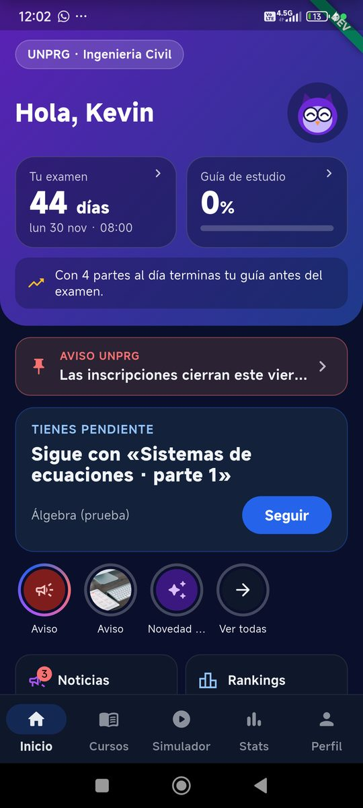
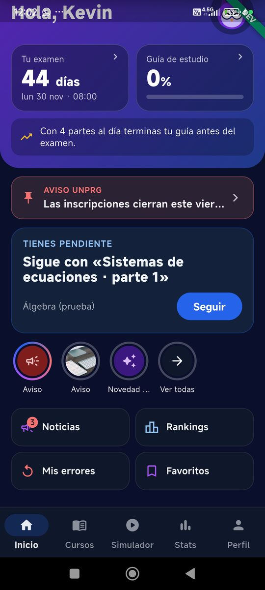
Cabecera
| Mensaje | Cuándo aparece | Al tocar |
|---|---|---|
| «UNPRG · Ingeniería Civil» | Chip con universidad y carrera del perfil. | Nada. |
| «Hola, {nombre}» y el búho feliz | Siempre. Nombre del perfil o de la cuenta de Google; si no hay, «estudiante». | Nada. |
| «Tu examen · {n} días» · «{dom 30 nov · 08:00}» | Fecha única (la misma en Inicio, plan, Simulador y Stats): el Próximo examen de admisión de la universidad ADMIN si no pasó; si no, el último día del mes que el alumno eligió en Tu meta, con «{Nov 2026} · por confirmar». El día del examen: «¡Hoy!». Sin ninguna de las dos: «Sin fecha · Ver exámenes pasados». | Abre Exámenes pasados (Simulador). |
| «Guía de estudio · {percent}%» con barra | Siempre; «—» mientras cargan los cursos. El % cuenta partes aprobadas sobre todas las partes activas de tus cursos. | Abre la Guía de estudio. |
| «Con {n} partes al día terminas tu guía antes del examen.» | Solo sin plan (con plan el ritmo va en «Tu plan de hoy»). Con fecha de examen: partes que faltan ÷ días que faltan, redondeado hacia arriba. | Nada. |
| «Avanza un poco cada día: cada parte suma a tu guía.» | Sin fecha de examen (o ya pasó). | Nada. |
| «¡Terminaste tu guía! Repasa con el Simulador.» | Todas las partes aprobadas. | Nada. |
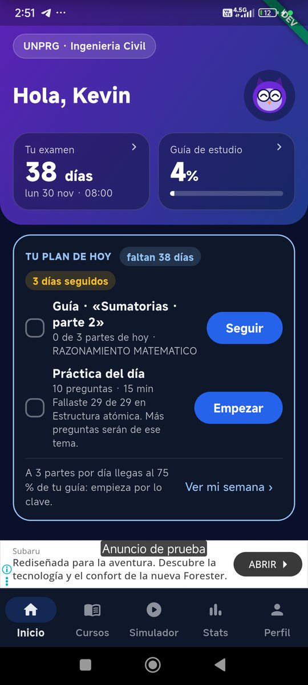
Tu plan de hoy (con plan)
Si el alumno tiene meta, bajo la cabecera aparece la misma tarjeta «TU PLAN DE HOY» que en el Simulador (ver Tu plan de hoy): la parte de la guía que toca y la práctica del día. En el Inicio no lleva el chip «faltan {n} días» (ya está en «Tu examen», justo arriba). Sin meta no aparece y el ritmo sigue en la cabecera.
Historias, aviso fijado, pendientes y mosaicos
| Mensaje | Cuándo aparece | Al tocar |
|---|---|---|
| Franja roja «AVISO UNPRG · {título}» | Si hay una noticia urgente o fijada vigente para tu universidad (o general). Solo una: la urgente más reciente; si no, la fijada más reciente. Ver Noticias. | Abre el detalle. |
| «TIENES PENDIENTE» · «Rinde el examen de «{subtema} · parte {n}»» · «Rendir» | Sin plan: la última parte que abriste ya tiene revisadas todas sus secciones y su examen sin aprobar. Con plan los pendientes solo muestran el examen del Simulador a medias (la guía y la práctica ya están en «Tu plan de hoy»); sin él, la tarjeta no aparece. | Abre esa parte (ahí está «Rendir examen»). |
| «Sigue con «{subtema} · parte {n}»» · «Seguir» | La última parte que abriste todavía no está completa. | Abre esa parte. |
| «Termina tu examen del Simulador» · «{examen} · {n} respuestas guardadas» · «Retomar» | Hay un examen del Simulador sin entregar guardado en el teléfono. | Lo retoma. |
| «Ver los {n} ›» | Con más de un pendiente. | Abre «Tus pendientes» con todos. |
| «¡Estás al día!» · «Sigue con tu guía o practica en el Simulador.» · «Ir a la guía» | Sin pendientes. | Abre la Guía de estudio. |
| En la cabecera morada, bajo los contadores: «NOVEDADES» · «Ver todas ›» y un círculo por historia (anillo cálido; blanco tenue si ya la viste) con su nombre corto en hasta dos líneas | Si hay noticias marcadas como historia, vigentes y de los últimos {días} ADMIN 7, máximo 5; sin historias, la cabecera queda como antes. El nombre es el «Nombre en la historia» del admin ADMIN; si está vacío, el titular: sin paréntesis, hasta los dos puntos (si lo de antes es muy corto, como «Nuevo:», lo de después) y hasta 24 letras sin palabras sueltas al final («Inscripciones abiertas», «Rankings con tu búho», «Reto del día»). | Abre el visor de historias; «Ver todas ›», la lista de Noticias. |
| Cuatro mosaicos de color (degradado oscuro, ícono grande de fondo y una línea de estado): «Noticias» · «{n} nuevas» con contador / «Estás al día»; «Rankings» · el búho de tu etapa · «Aspirante · 55 XP» (XP de la semana) / «Ligas y reto diario» con la liga apagada; «Mis errores» · «Practica lo que fallaste»; «Favoritos» · «{n} guardadas» / «Guarda preguntas» | Siempre. Colores: morado, azul, coral y turquesa (sin dorado, que es del dominio). Sin lecturas nuevas: no leídas, etapa, XP y guardadas ya estaban en el teléfono. | Abren cada apartado. «Favoritos» abre las preguntas guardadas. |
Tus pendientes (desde «Ver los {n}»): la misma lista, cada uno con su etiqueta («EXAMEN DE PARTE», «CONTINUAR ESTUDIANDO», «SIMULADOR», «PLAN DE ENTRENAMIENTO») y su botón. Lo último estudiado se guarda por cuenta y en ese teléfono.
Mientras carga
Lienzo «Estados de carga», opción C (https://claude.ai/artifact/7DdgcpRzgN7PrkQnvPoWML). Una tarjeta nunca dice algo antes de saberlo: ni «¡Estás al día!» en Inicio ni «Jugar» en el Reto del día.
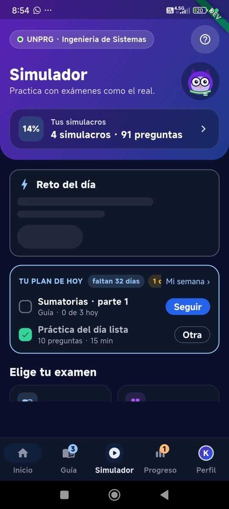
| Mensaje | Cuándo aparece | Al tocar |
|---|---|---|
| Bloques grises con un brillo que los recorre, con la forma de la tarjeta | La app aún no sabe la respuesta y no tiene nada guardado en el teléfono (primera vez, datos borrados, día nuevo del reto): «Tu plan de hoy» y los pendientes, la fecha de «Tu examen» y el Reto del día. Con «reducir movimiento» el brillo queda quieto. | Nada. |
| «Actualizando» con un círculo pequeño, arriba a la derecha de «Tu plan de hoy», de los pendientes o del Reto del día | Se muestra lo último guardado en el teléfono mientras llega la respuesta del servidor; desaparece al llegar. Lo guardado no cuenta como lectura en Firebase. | Nada. |
| Mosaico «Noticias» sin línea de estado | Mientras cargan las noticias (antes decía «Estás al día» un instante). | Abre Noticias. |
| Reto del día «Jugar» | Solo cuando el servidor confirma que hoy no lo jugaste. Si lo jugaste, «Hecho · {aciertos}/{total} · {tiempo}» aparece al instante desde el teléfono. | Ver Simulador. |
NOTICIAS
Noticias
Las publica el admin. La app decide dónde se ve cada una según su prioridad y la universidad del perfil del alumno (contrato docs/news_contract.md).
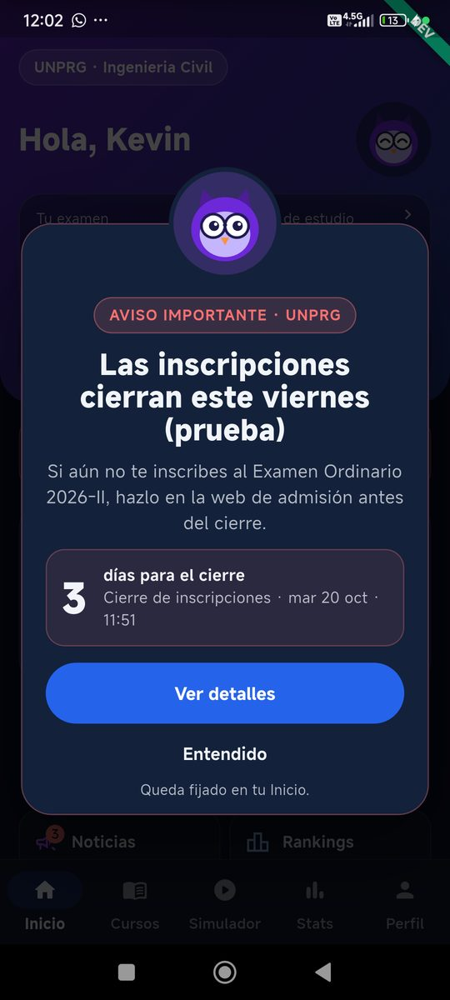
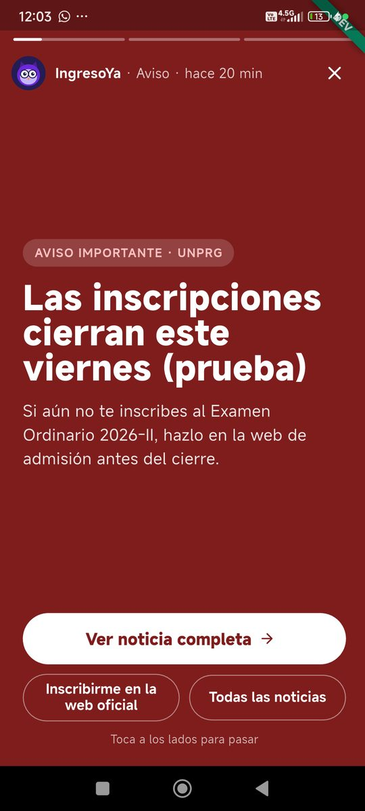
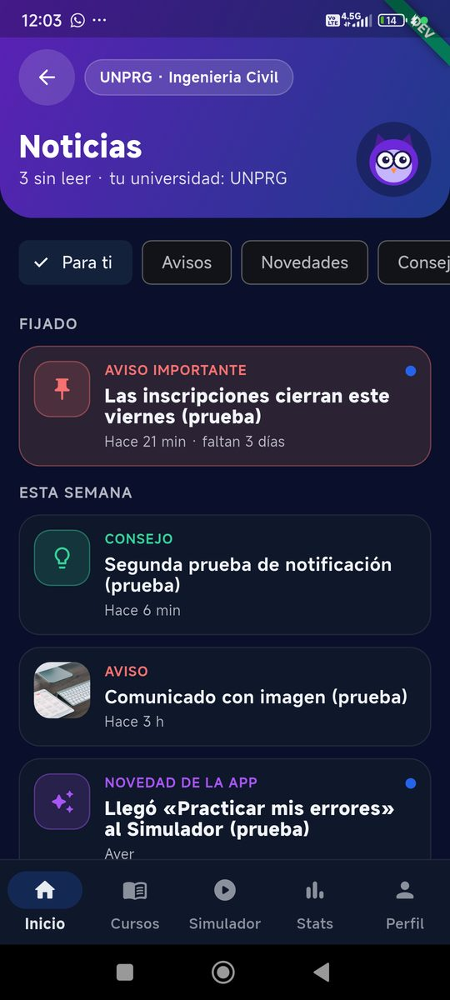
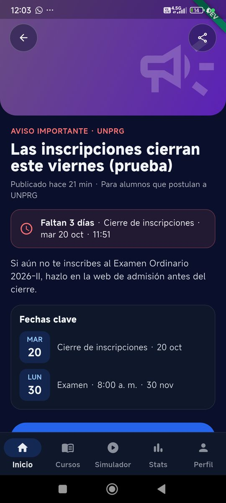
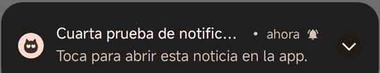
| Noticia | Ventana al abrir | Fijada en el Inicio | Historias | Lista | Notificación |
|---|---|---|---|---|---|
| Urgente para tu universidad (o general) | Sí, una sola vez | Sí, hasta vencer | Si se marcó | Arriba, «FIJADO» | Si se marcó |
| Fijada para tu universidad (o general) | No | Sí, hasta vencer | Si se marcó | Arriba, «FIJADO» | Si se marcó |
| Normal | No | No | Si se marcó | Por fecha | Si se marcó |
| De otra universidad | Nunca | Nunca | Nunca | Solo en «Otras universidades», con «Solo UNPRG» | Nunca |
| Mensaje | Cuándo aparece | Al tocar |
|---|---|---|
| Ventana «AVISO IMPORTANTE · UNPRG» con búho, título, texto, «{n} días para el cierre · {evento} · {fecha}», «Ver detalles», «Entendido», «Queda fijado en tu Inicio.» | Al abrir el Inicio, si hay una urgente vigente que no viste. Con imagen (un comunicado), la imagen ocupa la ventana con «Toca para ampliar» y una X. | «Ver detalles» abre el detalle; la imagen, el visor; «Entendido» la cierra (no vuelve a salir). |
| Lista «Noticias» · «{n} sin leer · tu universidad: UNPRG» · filtros «Para ti», «Avisos», «Novedades», «Consejos», «Otras universidades» · secciones «FIJADO», «ESTA SEMANA», «ANTERIORES» | Desde «Ver todas», el atajo o «Todas las noticias». Punto azul en las no abiertas. En «Otras universidades»: «Solo {siglas}» y «no es de tu universidad». | Abre el detalle. |
| «Aún no hay noticias» · «Aquí verás los avisos de tu universidad y las novedades de la app.» | Sin noticias en el filtro («No hay noticias de otras universidades.» en ese filtro). | — |
| Detalle: imagen o color de la categoría, «Publicado hace…», «Para todos los alumnos» / «Para alumnos que postulan a UNPRG», «Faltan {n} días · {evento} · {fecha}», texto, «Fechas clave», botón de acción, «Ver todas las noticias», «Compartir» | Siempre que la noticia siga publicada; si no, «Esta noticia ya no está disponible.». | El botón abre la web o la sección de la app que eligió el admin («No se pudo abrir el enlace.» si falla). |
| Visor de imagen: «Pellizca para acercar · desliza hacia abajo para cerrar», «Compartir» | Al tocar la imagen. | — |
| Visor de historias: «IngresoYa · {categoría} · {hace…}», título, texto, «Ver noticia completa», botón de acción, «Todas las noticias», «Toca a los lados para pasar» | Al tocar un círculo. Cada historia dura 7 s; mantener presionado pausa; deslizar hacia abajo cierra y hacia arriba abre el detalle. | — |
| Notificación «Aviso UNPRG: {título}» · {texto} | Si el admin marcó «Enviar notificación»: llega una sola vez al publicarse (las programadas, a su hora) y solo a los alumnos de la audiencia. Android 13+ pide permiso al entrar. | Abre el detalle. |
Lo leído (ventanas, historias, noticias abiertas) se guarda en el teléfono por cuenta.
ANUNCIOS
Anuncios
Anuncios de AdMob para los alumnos sin plan premium (contrato docs/ads_contract.md, Fase 5A de la reestructuración de costos). Regla fija: nunca dentro de una lección, un examen en curso ni las historias. Todo lo demás lo decide el admin en Configuración → Anuncios y se puede apagar sin publicar una versión nueva. Mientras no haya cuenta de AdMob, la app usa los anuncios de prueba de Google (se ven como anuncios reales con la etiqueta «Test Ad»).
| Dónde | Qué se ve | Cuándo aparece |
|---|---|---|
| Pestañas Inicio, Guía, Simulador (portada), Progreso y Perfil; lista de Noticias; Rankings | Franja (banner adaptable) al pie, sobre la barra de pestañas. Al cambiar de pestaña el mismo banner aparece al instante. | Si el admin encendió esa pantalla ADMIN y el anuncio cargó (la primera vez tarda unos segundos); si no carga, no ocupa espacio. |
| Al terminar un examen (de parte, de dominio o del Simulador), antes de ver el resultado | Anuncio de pantalla completa; se cierra con la X y recién entonces aparece el resultado. | Siempre, de fábrica. El admin puede liberar el primer examen del día ADMIN y pedir un mínimo de {minutos} ADMIN 0 entre dos. Si el anuncio no estaba listo se espera hasta 5 s y se sigue sin él. |
| Revisión de un examen: tarjeta con el búho «Desbloquea la explicación» · «Ganas +5 XP · te quedan 25 XP hoy» · «Ver video · +5 XP» · «Premium» | En las preguntas falladas o en blanco, en lugar de la explicación. Las acertadas se ven directo. | Si el admin tiene los videos encendidos ADMIN. Al terminar el video la explicación se abre con el búho feliz, «¡Así se resuelve!», la insignia «+5 XP» y el aviso «+5 XP por aprender de tu error · te quedan 20 XP hoy»; no se vuelve a pedir en la sesión. Cada pregunta da XP una sola vez; con el tope diario lleno la tarjeta dice «Hoy ya ganaste tus 25 XP» y el botón «Ver video y abrir». Con XP apagado en el admin: «Mira un video corto para verla.». Si el video no carga, la explicación se abre igual. Si se cierra antes de tiempo: «Termina el video para ver la explicación.». |
| Alumno premium | Nada. | Con premium.until vigente en el perfil (ver «Plan Premium»). |
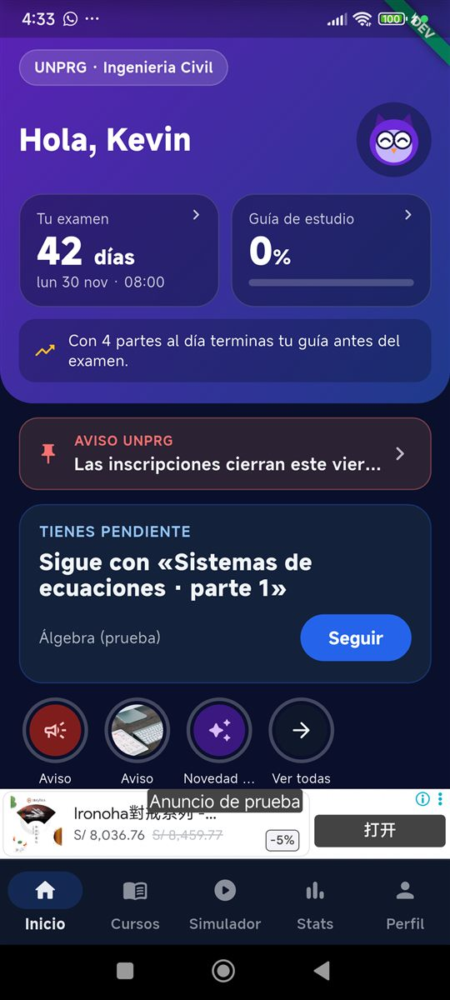
El banner ocupa solo su alto (unos 60 dp) y el contenido del Inicio sigue completo encima. La misma franja aparece en Cursos, Simulador, Stats y Perfil al cambiar de pestaña, sin volver a cargar. Si el anuncio no carga, la franja no aparece. Con el alumno premium la franja desaparece sin reiniciar nada más que la pantalla.
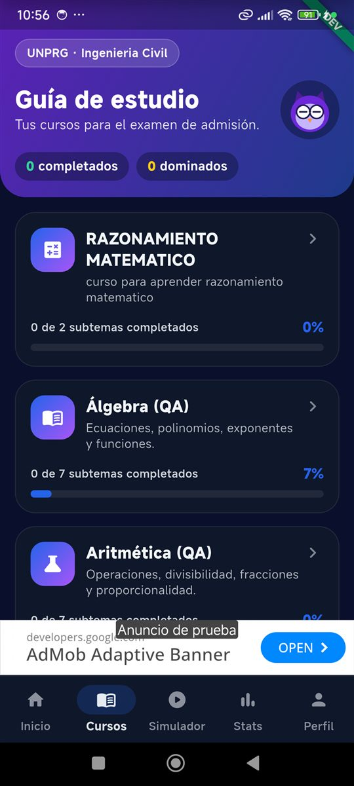
Las cinco pestañas comparten un solo banner cargado: cambiar de pestaña no vuelve a pedir el anuncio ni deja un hueco mientras carga. Una pantalla que se abre encima de otra (Noticias sobre el Inicio) carga el suyo.
Se precarga al abrir el examen, así sale sin espera. Si no estaba listo (sin red al abrir, sin relleno) la app espera como mucho 5 segundos y sigue al resultado sin él. Los exámenes largos piden otro anuncio al final si el primero caducó.
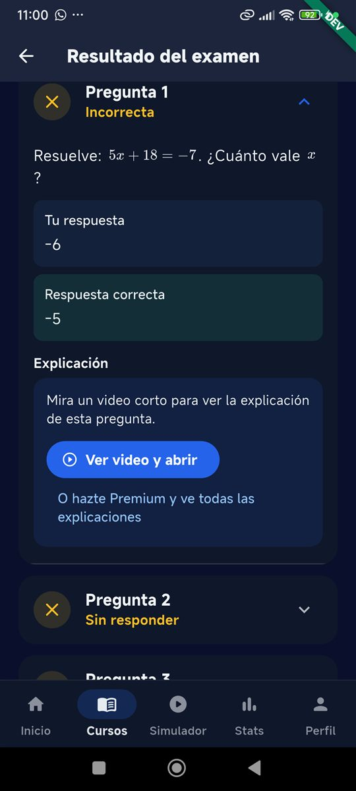
Las preguntas acertadas y las que no tienen explicación no piden video. Si el alumno cierra el video antes de tiempo ve «Termina el video para ver la explicación.» y puede volver a intentarlo. El XP lo da el servidor solo si el video se vio completo; si no había video, la explicación se abre igual, sin XP. El monto (5) y el tope diario (25) son ajustes de Configuración → Cómo gana XP el alumno ADMIN.
PREMIUM
Plan Premium
Suscripción mensual o anual de Google Play que quita los anuncios y abre los exámenes pasados sin límite diario (contrato docs/premium_contract.md, Fase 5B de la reestructuración de costos). El servidor decide quién es premium: la app manda el comprobante de la compra y las Functions lo verifican con Google Play. Mientras el admin tenga Premium apagado ADMIN, nada de esto se ve y la cuenta gratuita no tiene límites.
| Dónde | Mensaje | Cuándo aparece | Al tocar |
|---|---|---|---|
| Perfil | «IngresoYa Premium · Sin anuncios y exámenes pasados sin límite. Toca para ver los planes.» | Alumno con sesión, Premium encendido y sin plan vigente. | Abre la pantalla Premium. |
| Perfil | «Premium hasta el {dd/mm/aaaa} · Sin anuncios y sin límites. Toca para ver tu plan.» | Con premium.until vigente (compra o regalo del admin), aunque Premium esté apagado. | Abre la pantalla Premium. |
| Pantalla Premium | «Estudia sin anuncios y con todos los exámenes pasados abiertos.» · «Qué incluye» (sin anuncios, exámenes pasados sin límite, explicaciones sin videos) · «Planes»: «Mensual · {precio} al mes» y «Anual · {precio} al año» con «Suscribirme» · «Restaurar compras» · nota legal. | Los precios los da Google Play. Si la tienda no responde: «Google Play no está disponible en este momento. Inténtalo más tarde.». Con Premium apagado: «Muy pronto podrás suscribirte desde aquí.». | «Suscribirme» abre la hoja de pago de Google Play; «Restaurar compras» recupera una suscripción ya pagada con esa cuenta de Google. |
| Pantalla Premium, tras pagar | «¡Listo! Ya eres Premium.» · «Tu pago está en proceso. Te avisaremos cuando se confirme.» · «No se completó la compra.» · «No pudimos confirmar la compra. Si ya pagaste, toca «Restaurar compras» en unos minutos.» · «No encontramos compras para restaurar con esta cuenta de Google.» | Según lo que responda Google Play y el servidor. La compra se reconoce ante Play solo cuando el servidor la aceptó. | — |
| Pantalla Premium, con plan | «Premium activo hasta el {dd/mm/aaaa}» + «Suscripción de Google Play. Se renueva sola; puedes cancelarla cuando quieras.» o «Acceso regalado por el equipo de IngresoYa.» · «Administrar en Google Play» | Con plan vigente. El botón solo con suscripción de Play. | Abre las suscripciones de Google Play. |
| Simulador → Exámenes pasados | Aviso «Exámenes pasados de hoy»: «Hoy ya usaste tus {n} exámenes pasados gratis. Vuelve mañana o pásate a Premium para rendirlos sin límite.» · «Cerrar» · «Ver Premium» | Cuenta gratuita al intentar el examen pasado número {n}+1 del día (hora del Perú), con Premium encendido y {n} ADMIN 3 mayor que 0. Un reintento del mismo examen no cuenta. | «Ver Premium» abre la pantalla Premium. |
| Revisión de un examen, en la tarjeta del video | «Premium» | Con Premium encendido, en las preguntas falladas que piden video. | Abre la pantalla Premium. |
| Alumno premium | Ningún anuncio, ningún candado de video, ningún tope de exámenes pasados. | Mientras premium.until sea futuro. | — |
GUÍA DE ESTUDIO
Guía de estudio
El contenido tiene cuatro niveles: curso → tema → subtema → parte. Cada parte tiene una ruta de secciones (Video, Lección, Ejemplos, Repasar, Recursos) que se marcan «Revisado». Al terminar la ruta se abre el examen de la parte; aprobarlo completa la parte. Con todas las partes aprobadas, el subtema da la medalla de plata, y el examen de dominio da la de oro.
flowchart LR A[Curso] --> B[Tema] --> C[Subtema] --> D[Parte] D --> E[Ruta: Video · Lección · Ejemplos · Repasar · Recursos] E -->|todo revisado| F[Examen de la parte] F -->|aprobado| G[Parte completada] G -->|todas las partes| H[Plata: subtema completado] H --> I[Examen de dominio] I -->|aprobado| J[Oro: subtema dominado]
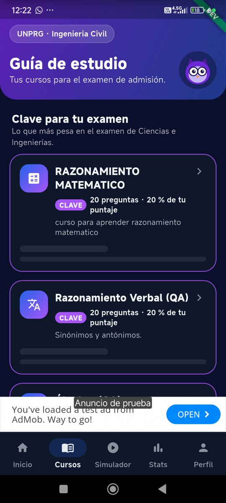
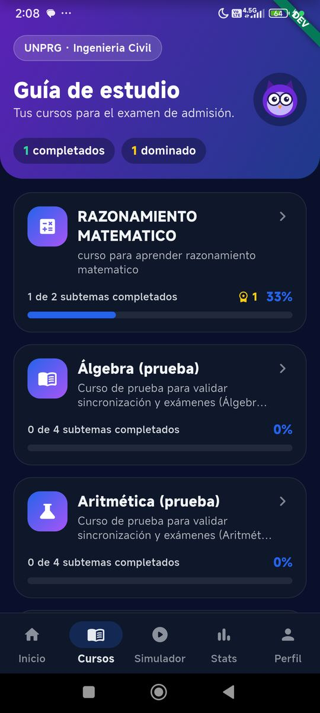
Cursos
| Mensaje | Cuándo aparece | Al tocar |
|---|---|---|
| «{n} completados» · «{n} dominado(s)» | Cuando el servidor devolvió tu resumen de logros. Si está cargando o falla, no aparecen. | Nada. |
| Tarjeta del curso: nombre, descripción | Por cada curso de tu universidad y carrera. | Abre el curso. |
| «Clave para tu examen» · «Lo que más pesa en el examen de {área}.» | Si la carrera del alumno tiene área del examen ADMIN: primero los cursos marcados ★ clave en su área, de mayor a menor peso, con borde y etiqueta «CLAVE» y «{n} preguntas · {p} % de tu puntaje» (preguntas × puntos ÷ puntaje máximo del examen). | Abre el curso. |
| «También vienen en tu examen» · «{n} preguntas en tu examen» | Los demás cursos con preguntas en su examen, de mayor a menor peso. | Abre el curso. |
| «No vienen en tu examen» · «Repásalos si te sobra tiempo.» | Cursos sin preguntas en su área, al final y atenuados. Sin área, la lista sale como siempre, sin grupos. | Abre el curso. |
| «{c} de {t} subtemas completados» | c viene del servidor; t son los subtemas del curso. | — |
| Medalla dorada + número | Si hay subtemas dominados en el curso. | — |
| «{n}%» y barra | 100 % si todos los subtemas están completos; si no, avance por partes aprobadas. | — |
| «Aún no hay cursos disponibles» | Lista vacía. | — |
| Búho + mensaje de error + «Reintentar» | Error y ningún curso guardado en el teléfono. | Reintenta. |
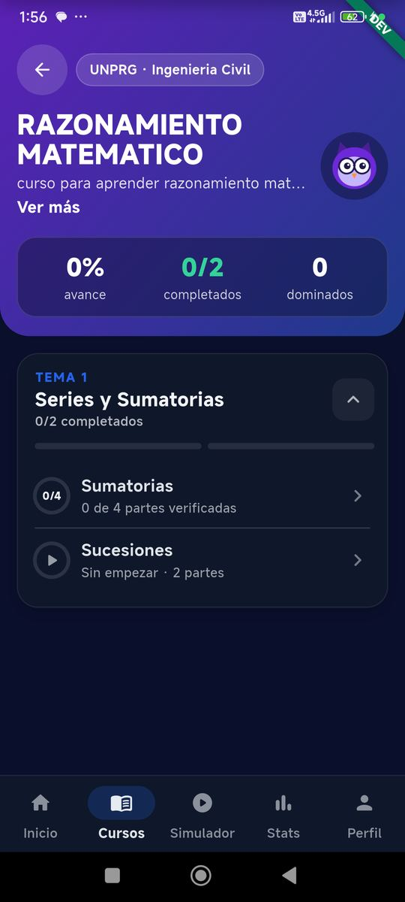
Un curso
| Mensaje | Cuándo aparece | Al tocar |
|---|---|---|
| «Cargando curso · Preparando tus temas y tu avance» | Mientras baja el contenido. Se guarda en el teléfono y se considera al día por 30 min; sin red se usa lo guardado. | — |
| «{pct}% avance» · «{c}/{t} completados» · «{m} dominado» | El % es el mismo del Inicio y de la tarjeta del curso: avance por partes aprobadas, 100 % si todos los subtemas están completos. Los números «{c}/{t}» siguen contando subtemas. | — |
| «TEMA {n}», nombre, «{c}/{t} completados · {m} dominados» | Por cada tema. Empiezan cerrados. Dorado si todos sus subtemas están dominados; verde si todos están completos. | Abre o cierra el tema. |
| «Examen de dominio disponible · {subtema} · consigue el oro» + «Rendir» | Tema abierto y algún subtema completo, con examen de dominio y sin dominar. | Abre el subtema. |
Estados de un subtema
| Texto | Cuándo |
|---|---|
| «Sin empezar · {n} partes» | Ninguna parte aprobada y ninguna sección revisada. Solo abrirlo no cuenta. |
| «{v} de {t} partes verificadas» | Hay al menos una parte aprobada o una sección revisada (puede decir «0 de 2»). |
| «Completado» (check verde) | El servidor confirmó el subtema. |
| «Dominado» (medalla dorada) | El servidor confirmó el examen de dominio. Nunca se deduce en el teléfono. |
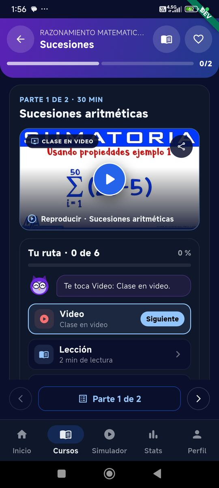
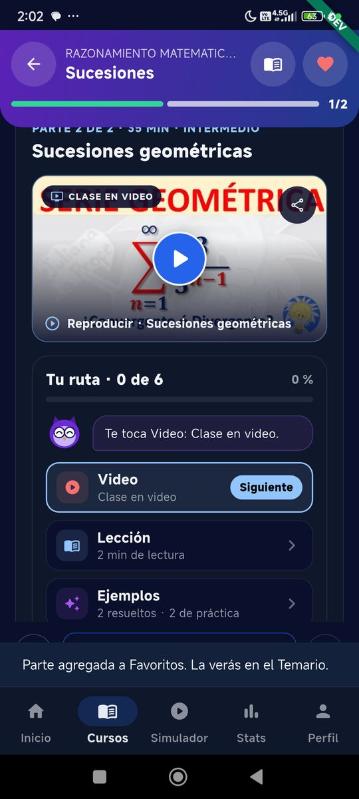
El subtema
| Mensaje | Cuándo aparece | Al tocar |
|---|---|---|
| ← «Volver al curso» | Siempre. | Vuelve al curso. |
| «{curso} › {tema}» y el subtema | Siempre. | — |
| Libro «Temario» | Siempre. | Abre el panel Temario / Favoritos. |
| Corazón «Agregar a favoritos» / «Quitar de favoritos» | Marca la parte abierta. Desactivado si el subtema no tiene partes. | «Parte agregada a Favoritos. La verás en el Temario.» / «Quitada de Favoritos.» / «Inicia sesión para guardar tus favoritos.» / «No pudimos guardar el favorito.» |
| Barra de partes y «{done}/{total}» o «¡Completado! {done}/{total}» | Verde = parte aprobada; blanco = la abierta. | — |
| «PARTE {n} DE {t} · {min} MIN · INTERMEDIO» | Los minutos y la dificultad solo si la parte los tiene. | — |
| Video «CLASE EN VIDEO» · «Reproducir · {parte}» | Si la parte tiene un enlace válido de YouTube. ✔ si ya está revisado. | Abre el reproductor. |
| «SIGUIENTE RECOMENDADA · Parte {n} de {t} · {nombre}» | La parte abierta ya está aprobada y queda otra sin aprobar. | Va a esa parte. |
| «Este subtema todavía no tiene partes publicadas.» | Sin partes activas. | — |
| ‹ · «Parte {n} de {t}» · › | Barra inferior. | Cambia de parte. El botón central abre «Ir a una parte». |
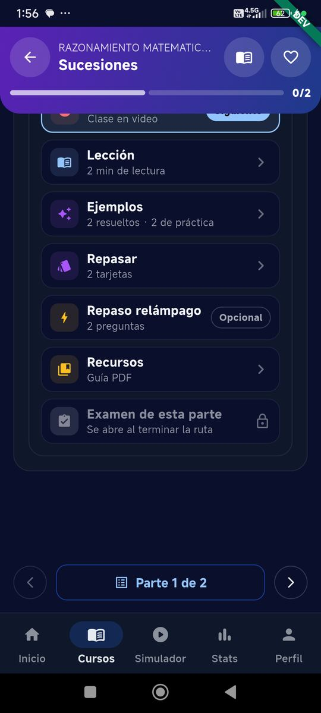
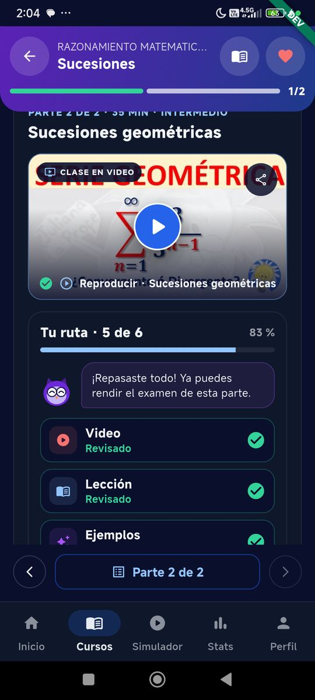
Tu ruta
Lista los pasos de la parte. Solo aparecen las secciones que tienen contenido: Video (si hay video), Lección, Ejemplos, Repasar (si hay tarjetas), Repaso relámpago (opcional, si hay preguntas rápidas), Recursos y el Examen.
| Mensaje | Cuándo aparece |
|---|---|
| «Tu ruta · {done} de {total}» y «{n} %» | total = secciones obligatorias + el examen (máximo 6). El Repaso relámpago no cuenta. |
Lo que dice el búho (en este orden de prioridad)
| Mensaje | Cuándo aparece |
|---|---|
| «¡Completaste esta parte! Sigue con la siguiente.» | Todo revisado y examen aprobado. |
| «¡Repasaste todo! Ya puedes rendir el examen de esta parte.» | Todo revisado y examen sin aprobar. |
| «Te toca {sección}: {detalle}.» | Primera sección sin revisar. Ej.: «Te toca Video: Clase en video.», «Te toca Lección: 2 min de lectura.». |
Estado de cada paso
| Estado | Cómo se ve |
|---|---|
| Revisado | «Revisado» en verde y ✔. |
| Siguiente | Pastilla «Siguiente» y borde azul en la primera sección pendiente. |
| Pendiente | Detalle (p. ej. «2 resueltos · 2 de práctica») y ›. |
| Repaso relámpago | «{n} preguntas» + «Opcional»; ya hecho: «Acertaste {c} de {t}». |
| Examen bloqueado | «Se abre al terminar la ruta» con candado. |
| Examen listo | «Al entregarlo, conocerás tu resultado.» + «Rendir». |
| Examen reprobado | «Aún no alcanzaste la meta. Puedes intentarlo de nuevo.» + «Rendir». |
| Examen aprobado | «¡Aprobaste! Ya puedes continuar.» Ya no se puede volver a rendir. |
Las secciones
Cada sección se abre en una hoja. Queda «Revisado» al cerrarla si estuvo abierta al menos el tiempo mínimo ADMIN (5 s). El video, en cambio, exige ver de verdad un porcentaje ADMIN (60 %); adelantar no cuenta. Al pie, «Siguiente: {sección}» cierra la hoja y abre la que sigue.
| Mensaje | Cuándo aparece |
|---|---|
| «Dedica al menos {s} segundos a «{sección}» para marcarla como revisada.» | Cerraste antes del mínimo. Hoy sale también si ya estaba revisada. |
| «Tu revisión quedó guardada. Confirmaremos tu avance cuando vuelvas a abrir el examen.» | Se guardó en el teléfono, pero el servidor no respondió. |
| «Video registrado como estudiado.» | Llegaste al porcentaje mínimo del video. |
| «El enlace de video no es válido.» | El enlace no es de YouTube. |
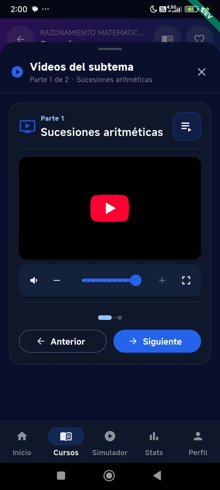
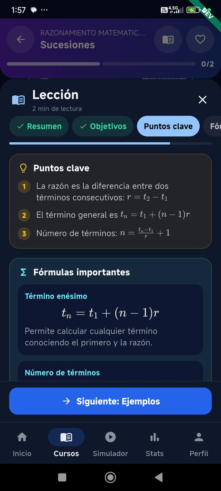
Video
Hoja «Videos del subtema» con «Parte N de M · {nombre}», el reproductor y la lista de todos los videos del subtema. «Anterior» / «Siguiente» cambian de video; ver el de otra parte marca esa parte.
Lección
Pestañas «Resumen», «Objetivos», «Puntos clave» y «Fórmulas» (solo las que tienen contenido) y una barra de lectura. El Resumen trae el globo del búho «EN CORTO»; Objetivos se titula «Qué aprenderás»; Fórmulas, «Fórmulas importantes», con LaTeX. El detalle «{n} min de lectura» se calcula a 180 palabras por minuto.
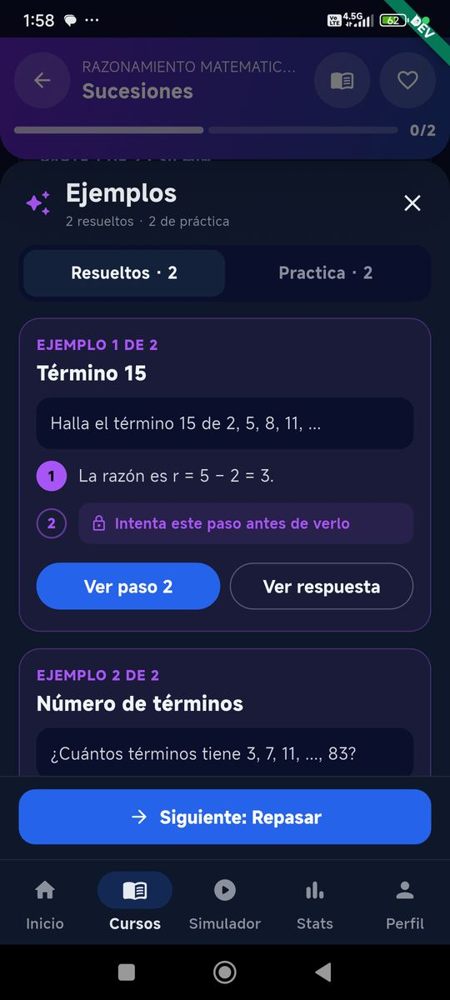
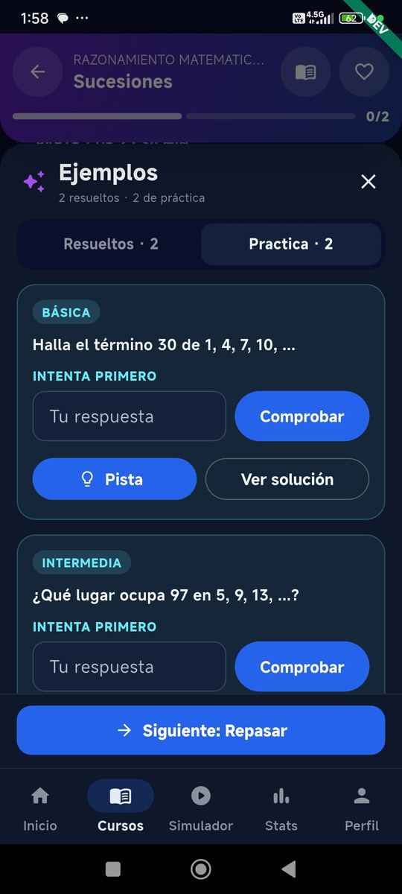
Ejemplos
| Mensaje | Cuándo aparece |
|---|---|
| «Resueltos · {n}» | «Practica · {n}» | Si hay ambos tipos. |
| «EJEMPLO {n} DE {t}», «🔒 Intenta este paso antes de verlo», «Ver paso {n}», «Ver respuesta», «RESPUESTA» | Ejemplo resuelto: los pasos se revelan de a uno. |
| «BÁSICA / INTERMEDIA / AVANZADA», «INTENTA PRIMERO», «Tu respuesta», «Comprobar» | Ejercicio con respuesta corta (una línea, valor final de 20 caracteres o menos). |
| «¡Correcto! Compara tu procedimiento con la solución.» | Acertaste; la solución se abre sola. Acepta formas equivalentes: «x = 4» y «4», 0,5 y 1/2, mayúsculas y tildes. |
| «Aún no. Revisa tu procedimiento, pide una pista o mira la solución.» | Respuesta distinta. |
| «Pista» / «Ver solución» | Si el ejercicio tiene pista / siempre. |
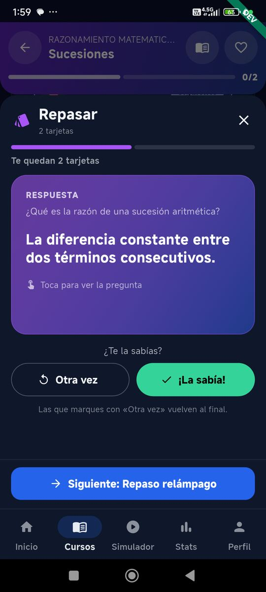
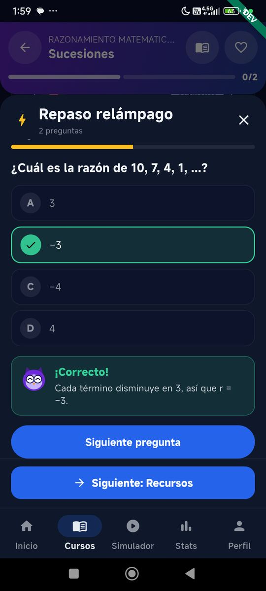
Repasar (tarjetas)
«Te quedan {n} tarjetas». La tarjeta muestra «PREGUNTA · Toca para revelar» y, al voltear, «RESPUESTA». Luego «¿Te la sabías?» con «Otra vez» (vuelve al final del mazo) o «¡La sabía!». Al final: «¡Terminaste! Sabías {k} de {t} a la primera.» y «Repasar de nuevo».
Repaso relámpago (opcional)
«Pregunta {n} de {t}» con alternativas. Al elegir: «¡Correcto!» o «Casi. La correcta es la {letra}.» y la explicación. Al final: «Acertaste {c} de {t}» y «¡Perfecto! Estás listo para el examen de la parte.» o «Repasa las que fallaste y vuelve a intentarlo.». No cuenta para el avance y el puntaje no se guarda.
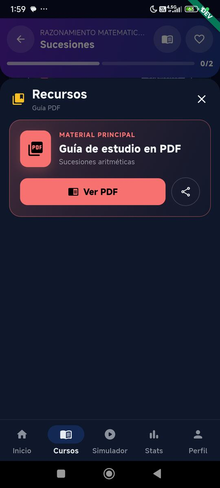
Recursos
«MATERIAL PRINCIPAL · Guía de estudio en PDF» con «Ver PDF» y compartir. El visor muestra «PDF {n} de {t}», «Descargar PDF» y «Llegaste al final del PDF.». Si falla: «No pudimos descargar el PDF. Revisa tu conexión e inténtalo nuevamente.». También puede haber «Imágenes · {n}» y «Enlaces · {n}» («No pudimos abrir este recurso.»).
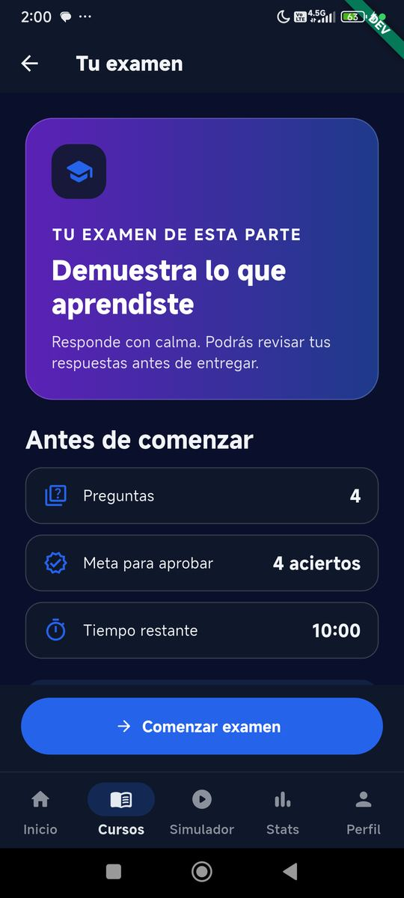
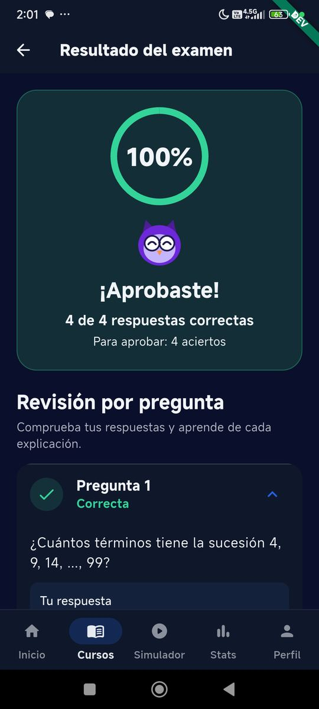
Examen de la parte
| Mensaje | Cuándo aparece |
|---|---|
| «Preparando tus preguntas · Elegimos las preguntas de tu examen. Solo tomará unos segundos.» | Al tocar «Rendir», mientras el servidor arma el examen. Antes se confirman las secciones revisadas; si eso falla, no entra. |
| «Esta parte todavía no tiene un examen disponible.» | La parte no tiene plantilla de examen asignada en el admin. |
| «TU EXAMEN DE ESTA PARTE» · «Demuestra lo que aprendiste» | Intro. Si la plantilla tiene un título propio, se usa ese. |
| «Preguntas {n}» · «Meta para aprobar {k} aciertos» · «Tiempo restante» | La meta es floor(n × % / 100) + 1 ADMIN (plantilla). |
| «Comenzar examen» | El reloj empieza en el servidor al tocarlo. |
| «Pregunta {n} de {t}», «{a}/{t} respondidas», «Pregunta tomada de {examen}» | Durante el examen. |
| «¿Entregar examen?» · «Tienes {n} preguntas pendientes…» · «Revisar» / «Entregar» | Al entregar. |
| «¿Pausar tu examen?» · «Seguir respondiendo» / «Pausar y salir» | Al salir. El reloj sigue corriendo. |
| «El tiempo del examen terminó.» / «Se terminó el tiempo. Ya no puedes cambiar tus respuestas.» | Se acabó el tiempo. En la guía no se entrega solo: el siguiente «Rendir» crea un examen nuevo. |
| «¡Aprobaste!» / «Aún no aprobaste» | Resultado. Se aprueba con más aciertos que el % de la plantilla (estricto). |
| «¡Buen trabajo! Revisa las secciones pendientes de esta parte para completar tu avance.» | Aprobaste pero falta alguna sección por confirmar. |
| «Revisión por pregunta»: «Falladas {n} · En blanco {n} · Correctas {n} · Todas», mapa de casillas numeradas, «Pregunta {n} · Incorrecta / En blanco / Correcta», «Marcaste B · era C», «TU RESPUESTA», «CORRECTA», «Explicación» | Siempre después de entregar. Abre en «Falladas» (si no hay, en «En blanco»; si tampoco, en «Todas»); la tarjeta cerrada ya muestra el enunciado y las letras; abierta muestra todas las alternativas como en el examen, la tuya en rojo y la correcta en verde. Tocar una casilla del mapa abre esa pregunta. |
| «Volver a la parte» · «Continuar a la siguiente parte» | El segundo, si aprobaste y no es la última parte. |
| «Tu resultado está listo, pero aún no pudimos actualizar tu avance. Inténtalo de nuevo más tarde.» | El servidor no devolvió el progreso de la parte. |
Si repruebas, puedes volver a rendir sin límite, con preguntas nuevas. Un examen pausado se retoma con las mismas preguntas.
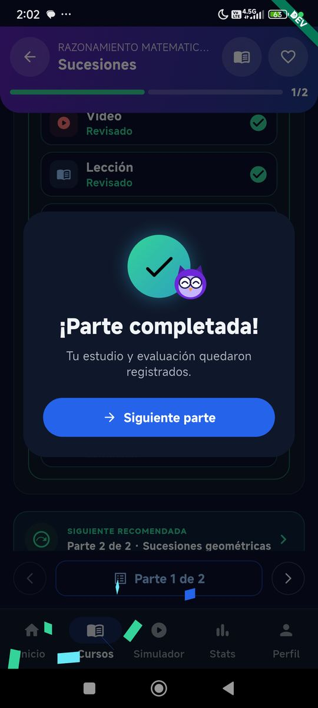
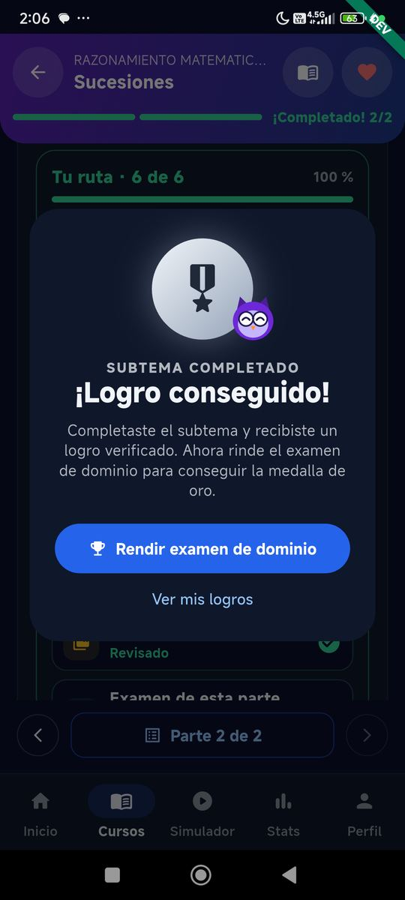
Celebraciones
| Mensaje | Cuándo aparece |
|---|---|
| «¡Parte completada!» · «Tu estudio y evaluación quedaron registrados.» · «Siguiente parte» / «Continuar» | Al completar una parte que no cierra el subtema. |
| «SUBTEMA COMPLETADO · ¡Logro conseguido!» (plata) | El servidor confirma que completaste todas las partes. |
| «…Ahora rinde el examen de dominio para conseguir la medalla de oro.» + «Rendir examen de dominio» | Además, el subtema tiene examen de dominio y no está dominado. |
| «…Puedes verlo en Mis logros.» | Completado, sin examen de dominio. |
| «Todas las partes están verificadas. Tu logro aparecerá cuando podamos confirmar la actualización.» | El servidor aún no confirma (sin red o retraso). |
| «TEMA COMPLETADO · ¡Completaste {tema}!» con medallas y «Siguiente tema» | En lugar de la anterior, cuando el subtema cierra todo el tema. |
Panel de logro arriba del subtema
| Mensaje | Cuándo aparece |
|---|---|
| «Tu camino en este subtema · {v} de {t} partes verificadas» | Todas las partes aprobadas en el teléfono, pero el servidor aún no confirma. |
| «Logro de subtema conseguido» | Plata confirmada. |
| «Examen de dominio disponible · Consigue el Dominio del subtema · Rendir» | Plata, con examen de dominio, sin oro. |
| «Subtema dominado · Dominado el dd/mm/aaaa» | Oro. |
| «No pudimos confirmar tus logros · Reintentar» | Falló el resumen y no hay copia guardada. |
Al entrar a un subtema completo sin oro, puede aparecer la invitación «¡Completaste todas las partes!» con «Rendir ahora» / «Más tarde». «Más tarde» la pospone 24 h.
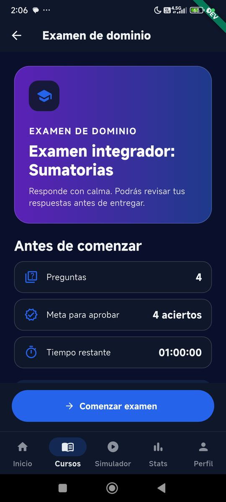
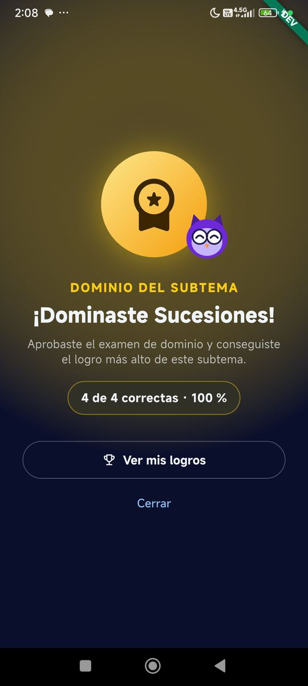
Examen de dominio
Usa la misma pantalla que el examen de la parte, con estas diferencias:
- Arriba dice «EXAMEN DE DOMINIO»; el título es «Examen de dominio: {subtema}».
- El resultado dice «¡Dominio conseguido!» si apruebas; el botón es «Volver al subtema».
- Se puede reintentar sin límite hasta dominarlo; después ya no se ofrece.
| Mensaje | Cuándo aparece |
|---|---|
| «DOMINIO DEL SUBTEMA · ¡Dominaste {subtema}!» · «{c} de {t} correctas · {p} %» | Al aprobarlo por primera vez. Botones «Siguiente subtema», «Ver mis logros», «Cerrar». |
| «Aún falta confirmar que completaste este subtema…» | El servidor todavía no registra la plata. |
| «El examen de dominio de este subtema no está disponible por ahora.» | Plantilla inexistente o no publicada. |
El dorado de la app está reservado para el dominio.
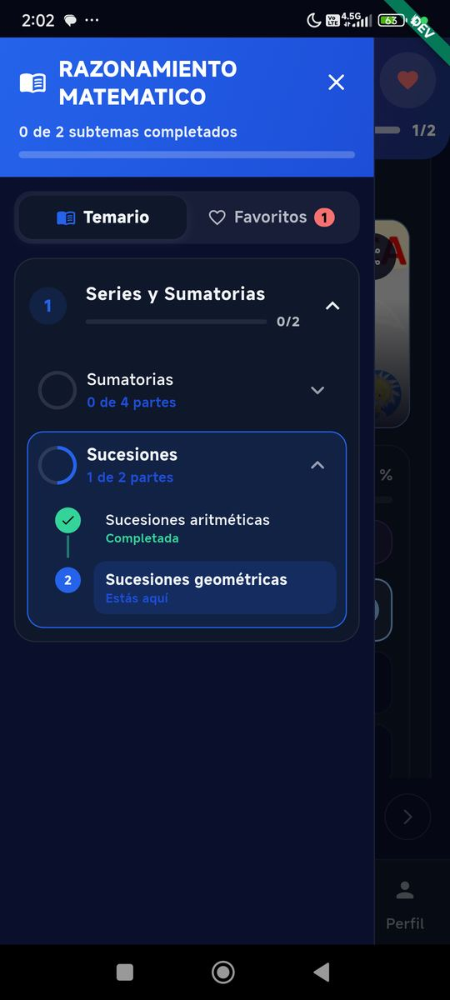
Temario y Favoritos
Se abre con el libro de la cabecera. Arriba: nombre del curso y «{c} de {t} subtemas completados».
- Temario: temas y subtemas con «Dominado», «Completado», «{v} de {t} partes» o «{n} partes», y cada parte como «Completada», «Estás aquí» o «Pendiente». Tocar una parte la abre.
- Favoritos ({n}): las partes marcadas con el corazón, agrupadas por subtema. Vacío: «Aún no tienes favoritos · Toca el corazón arriba a la derecha de una parte para guardarla aquí y volver a ella rápido.».
- Los favoritos se guardan en tu cuenta y se ven en cualquier teléfono; funcionan sin conexión y se suben después.
- El botón «Parte {n} de {t}» abre otra lista más simple, «Ir a una parte», con «Estás aquí».
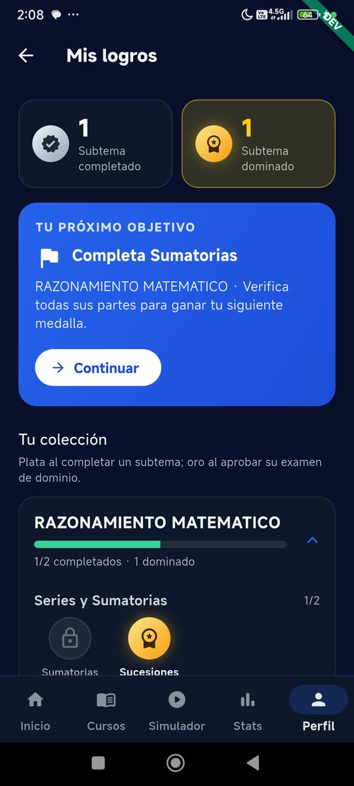
Mis logros
| Mensaje | Cuándo aparece |
|---|---|
| «{n} Subtema(s) completado(s)» · «{n} Subtema(s) dominado(s)» | Siempre, con datos del servidor. |
| «TU PRÓXIMO OBJETIVO · Rinde el examen de dominio de {subtema}» + «Rendir examen» | Prioridad 1: hay un subtema completo sin oro. |
| «Completa {subtema}» + «Continuar» | Prioridad 2: primer subtema sin medalla de un curso donde ya tienes alguna. |
| «Empieza con {subtema}» + «Empezar» | Prioridad 3: aún no tienes medallas. |
| «Tu colección» · medallas gris / plata / oro | Por curso y tema. «Plata al completar un subtema; oro al aprobar su examen de dominio.». |
| «Conseguidos recientemente» | Hasta 5 de cada tipo, con fecha. |
| «No pudimos cargar tus logros · Tu avance sigue a salvo…» | Error sin copia guardada (si hay copia, se muestra esa tras 8 s). |
SIMULADOR
Simulador
Dos caminos conviven: el plan guiado (la app propone qué practicar cada día) y el modo libre (el alumno elige). Todos los exámenes usan la misma pantalla, los califica el servidor y alimentan el historial, las estadísticas, la semana y la racha.
flowchart LR
I[Inicio del Simulador] --> P{¿Tiene meta?}
P -->|no| M[Tu meta]
P -->|sí, sin exámenes| D[Diagnóstico inicial]
P -->|sí, día de simulacro| S[Simulacro semanal: examen pasado]
P -->|sí| H[Hoy te toca: 10 preguntas]
I --> L[Elige tu examen: Por curso · Mezcla · Aleatorio · Examen pasado]
D & S & H & L --> E[Pantalla del examen] --> R[Resultado] --> X[Revisar · Mis errores · Historial · Stats]
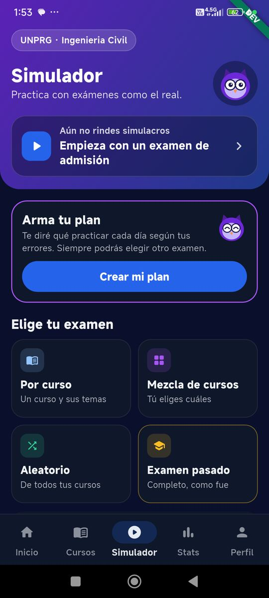
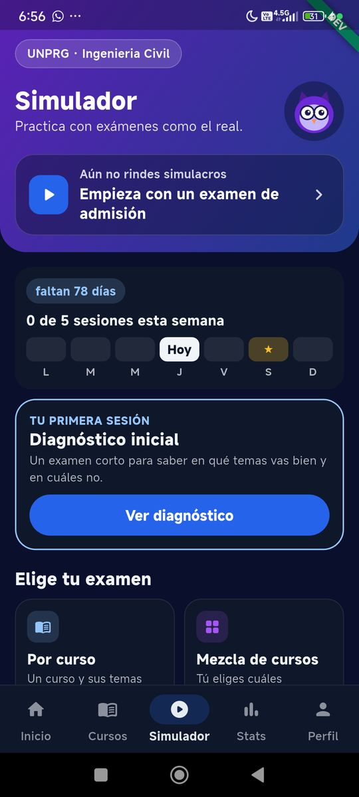
Inicio del Simulador
Pestaña «Simulador». De arriba abajo: cabecera con la tarjeta bajo el búho, tarjeta del plan, «Elige tu examen» y «Tu progreso e historial».
| Mensaje | Cuándo aparece | Al tocar |
|---|---|---|
| Chip «{universidad} · {carrera}» | Si el perfil los tiene. | Nada. |
| «Simulador» · «Practica con exámenes como el real.» | Siempre. | — |
| «Tienes un examen sin terminar» · «{título} · {a} de {t} respondidas» · «Retomar» / «Descartar» | Arriba de la tarjeta del plan, si en este teléfono quedó un examen del Simulador abierto (la app se cerró o se pausó) y el servidor dice que sigue en curso. Uno ya entregado o vencido se olvida solo. | «Retomar» abre el mismo examen con sus respuestas y el reloj que le queda («Tiempo restante», botón «Continuar examen»). «Descartar» solo quita la tarjeta. |
| «Elige tu examen»: «Por curso · Un curso y sus temas», «Mezcla de cursos · Tú eliges cuáles», «Aleatorio · De todos tus cursos», «Examen pasado · Completo, como fue» | Siempre, con o sin plan. | Los tres primeros abren Arma tu práctica en esa pestaña; el cuarto, Exámenes pasados. |
| «Tu progreso e historial» | Siempre. | Abre el historial. |
La tarjeta bajo el búho
Un solo %: el Inicio, la tarjeta del curso, el detalle del curso, la barra del Temario y la barra de cada curso en Mis logros usan el mismo cálculo (partes aprobadas; 100 % con todos los subtemas completos). Los textos «N de M subtemas» siguen contando subtemas.
Es la tarjeta dentro de la cabecera morada, debajo del título y del búho. Tiene dos variantes y depende solo de cuántos exámenes del Simulador entregaste: cuenta todos los tipos (examen pasado, prácticas, «Hoy te toca», diagnóstico y «Mis errores»), hasta 200.
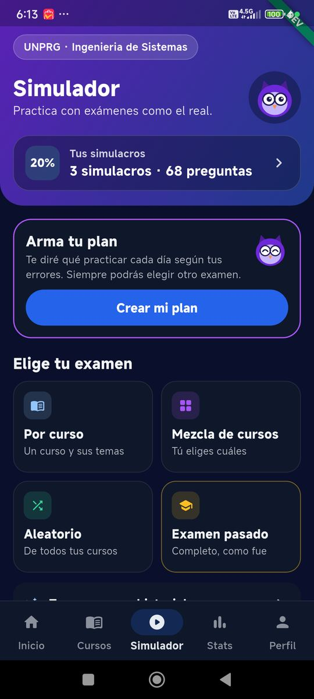
| Variante | Mensaje | Cuándo aparece | Al tocar |
|---|---|---|---|
| A | ▶ «Aún no rindes simulacros» · «Empieza con un examen de admisión» | No has entregado ningún examen del Simulador. También se ve mientras cargan tus resultados o si fallan al cargar. | Abre Exámenes pasados. |
| B | «{p}%» · «Tus simulacros» · «{n} simulacros · {m} preguntas» | Desde tu primer examen entregado. {p} = correctas ÷ (correctas + incorrectas): las preguntas en blanco no cuentan. {m} suma todas las preguntas, incluidas las en blanco. | Abre Tu progreso e historial. |
Ejemplo de la captura B: 3 simulacros con 68 preguntas y 20 % de acierto sobre las respondidas.
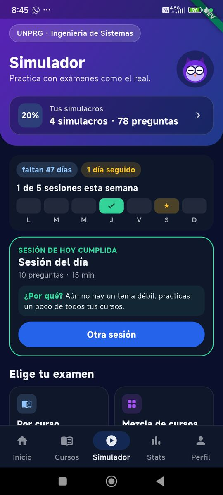
Tu plan de hoy
Sin meta se ve «Arma tu plan» · «Te diré qué practicar cada día según tus errores. Siempre podrás elegir otro examen.» · «Crear mi plan» (abre Tu meta). Con meta, la tarjeta «TU PLAN DE HOY» (también en el Inicio) junta lo que toca hoy en poco espacio: una línea de cabecera y cada tarea con un título y un detalle de una línea (lo que no cabe se corta con «…»). El ritmo está en Tu semana; el tema débil va corto en el detalle de la práctica.
| Parte | Mensaje | Cuándo aparece | Al tocar |
|---|---|---|---|
| Chips | «faltan {n} días» (+ «· por confirmar») · «{n} días seguidos» | Días hasta la fecha única del examen; «tu examen es hoy» el mismo día; sin fecha no hay chip; en el Inicio no se muestra. Racha si es mayor que 0. | — |
| Guía | «{subtema} · parte {n}» · «Guía · {h} de {m} hoy» · «Seguir» | La parte que toca: la última que abriste si aún no está aprobada; si no, la primera sin aprobar empezando por los cursos clave del área de tu carrera y luego por peso. m = el ritmo de hoy; h = partes aprobadas hoy. | Abre esa parte. |
| Guía cumplida | «{subtema} · parte {n}» · «Guía · {m} de {m} hoy» (check verde) · «Seguir» (botón con borde) | Ya aprobaste las m partes de hoy. | Adelanta la siguiente. |
| Día sin guía | «{subtema} · parte {n}» · «Guía · hoy descansas, puedes adelantar» · «Seguir» (botón con borde) | Hoy no es día de estudio (por los días por semana de tu meta) o es el día del simulacro. | Abre la siguiente parte. |
| Guía terminada | «¡Guía terminada!» · «Repasa con el Simulador» (check verde) | Todas las partes aprobadas. | — |
| Práctica | «Práctica del día» · «{10} preguntas · refuerza {tema}» (con tema débil y «Mostrar ¿Por qué?» encendido ADMIN) o «{10} preguntas · {15} min» · «Empezar» | Día normal sin práctica hecha. Ya hecha: «Práctica del día lista» y «Otra». | Crea «Hoy te toca», siempre con reloj. |
| Simulacro | «★ Simulacro» · «Un examen pasado completo» · «Empezar» | Hoy es tu día de simulacro y no entregaste un examen pasado desde el lunes. | Abre Exámenes pasados. |
| Diagnóstico | «Diagnóstico» · «Examen corto · {30} min» ADMIN · «Empezar» | Tienes meta y ningún examen del Simulador entregado. | Abre el Diagnóstico. |
| Enlace | «Mi semana ›» (arriba a la derecha) | Siempre con meta. | Abre Tu semana. |
Días de estudio: tantos días como «días a la semana» de tu meta, en este orden de preferencia: lunes, martes, jueves, viernes, miércoles, domingo, sábado; el día del simulacro no es de estudio salvo con 7 días.
El recuadro «¿Por qué?»
| Mensaje | Cuándo aparece |
|---|---|
| «¿Por qué? Fallaste {x} de {y} en {tema}. Más preguntas serán de ese tema.» | Tienes un tema débil: al menos 5 respuestas ADMIN y menos del 50 % de acierto ADMIN. Se nombra el más débil (menor %; si empatan, el de más respuestas). Si los cursos no cargaron, se ve el id del tema. |
| «¿Por qué? Aún no hay un tema débil: practicas un poco de todos tus cursos.» | Ningún tema cumple la regla. |
| (sin recuadro) | El admin apagó «Mostrar ¿Por qué?». |
Sí se cumple. Al tocar «Empezar sesión», el servidor arma 10 preguntas ADMIN:
- el 60 % ADMIN (6 preguntas) sale de tus temas débiles, hasta 3, repartidas entre ellos;
- el resto sale de 3 cursos elegidos al azar, con más probabilidad los que más pesan en el área del examen de tu carrera (preguntas × puntos del prospecto); si tu carrera no tiene área, al azar.
Sin temas débiles, las 10 se reparten entre los cursos. Dentro de cada tema van primero las preguntas que no viste en 14 días ADMIN.
Un tema deja de ser débil cuando pasa del 50 % con 5 o más respuestas. Cuentan los aciertos de todos los exámenes del Simulador.
Semana y racha (con meta)
| Mensaje | Cuándo aparece |
|---|---|
| «faltan {n} días» / «falta 1 día» / «tu examen es hoy» (+ «· por confirmar») | Cuenta hasta la fecha única del examen: la de la universidad o, si no la publicó, el último día del mes de tu meta («por confirmar»). Sin ninguna, no aparece. |
| «{n} días seguidos» | Racha: días seguidos con sesión, tolerando 1 día vacío ADMIN. Hoy sin sesión todavía no la corta. |
| «{h} de {meta} sesiones esta semana» | h = días distintos con sesión desde el lunes (dos exámenes el mismo día cuentan 1). |
| Franja L M M J V S D | ✓ día con sesión; «Hoy» si hoy aún no; ★ día de simulacro futuro; gris el resto. |
Qué cuenta como sesión: cualquier examen del Simulador entregado con 10 o más preguntas ADMIN, sea del plan o libre. El admin puede limitarlo a sesiones del plan.
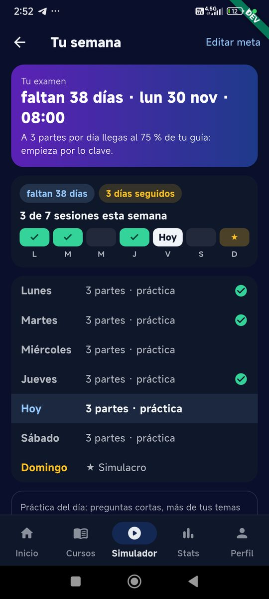
Tu semana
Se abre con «Ver mi semana ›». Ruta /simulator_plan_week.
| Mensaje | Cuándo aparece / regla |
|---|---|
| «Editar meta» (arriba a la derecha) | Siempre. Abre Tu meta. |
| «Tu examen» · «faltan {n} días · {lun 30 nov · 08:00}» y la frase del ritmo | Fecha única y el mismo ritmo de «Tu plan de hoy». |
| Chips, «{h} de {meta} sesiones esta semana» y la franja L…D | Igual que en Semana y racha. |
| Lunes … Domingo: «{n} partes · práctica» / «★ Simulacro» / «Descanso», check verde si ese día hubo sesión; «Hoy» resaltado | Día de estudio, día del simulacro o día libre según tu meta. |
| Glosario: «Práctica del día: preguntas cortas, más de tus temas flojos.» · «Simulacro: un examen pasado completo, con su tiempo y puntaje.» · «Diagnóstico: solo la primera vez, para saber por dónde empezar.» | Siempre, al final. |
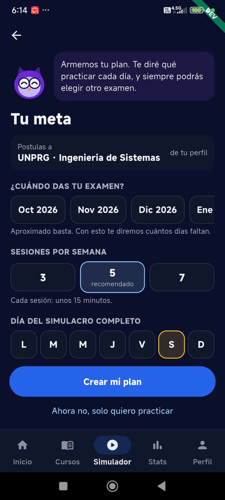
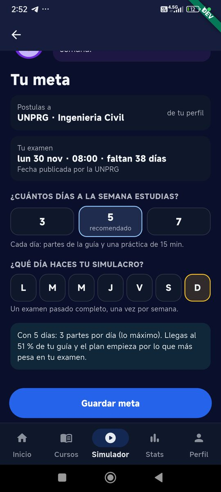
Tu meta
Se abre con «Crear mi plan» o, si ya existe, con «Editar meta» (Tu semana o el historial). Las mismas preguntas aparecen en el onboarding como paso opcional (ver abajo).
| Mensaje | Valor inicial / regla |
|---|---|
| Búho: «Ya sé a qué postulas y cuándo. Solo dime cuántos días estudias y armo tu semana.» / «Armemos tu plan. Te diré qué practicar cada día, y siempre podrás elegir otro examen.» | El primero si la universidad publicó la fecha; si no, el segundo. |
| «Postulas a {universidad · carrera} · de tu perfil» | Solo lectura; sale del perfil. |
| «Tu examen» · «{lun 30 nov · 08:00} · faltan {n} días» · «Fecha publicada por la {universidad}» | Si la universidad tiene próximo examen ADMIN. En ese caso no se pregunta el mes. |
| «¿EN QUÉ MES CREES QUE SERÁ TU EXAMEN?» (12 meses + «Aún no sé») · «Aproximado basta: cuando la universidad publique la fecha, usamos la suya.» | Solo si la universidad no publicó la fecha. |
| «¿CUÁNTOS DÍAS A LA SEMANA ESTUDIAS?» 3 · 5 · 7 y «recomendado» · «Cada día: partes de la guía y una práctica de {15} min.» | 5 ADMIN. |
| «¿QUÉ DÍA HACES TU SIMULACRO?» L…D · «Un examen pasado completo, una vez por semana.» | Sábado ADMIN. |
| «Con {d} días: {n} partes por día y terminas tu guía a tiempo.» / «Con {d} días: {n} partes por día (lo máximo). Llegas al {p} % de tu guía y el plan empieza por lo que más pesa en tu examen.» | Vista previa del ritmo; cambia al elegir los días. Sin fecha no aparece. |
| «Guardar mi plan» / «Guardar meta» · «Ahora no, solo quiero practicar» | Se guarda en tu perfil. Si falla: «No pudimos cargar esta información. Intenta de nuevo.» Ya no hay recordatorio diario (los avisos no existen todavía); el valor guardado se conserva. |
En el onboarding (paso 4 de 5, opcional)
| Mensaje | Cuándo / regla |
|---|---|
| Búho: «Arma tu plan de estudio» · «Es opcional: con esto te digo qué estudiar cada día.» | Después del nombre de usuario y antes de la confirmación. |
| «Tu examen…» o «¿EN QUÉ MES CREES QUE SERÁ TU EXAMEN?» · días a la semana · día del simulacro | Las mismas preguntas y valores de fábrica ADMIN que Tu meta. La fecha sale de la universidad elegida en el paso 1. Sin vista previa del ritmo (la guía aún no se descarga). |
| «Si prefieres, sáltalo: podrás armar tu plan cuando quieras desde el Simulador.» · pie «Podrás cambiar tu plan cuando quieras en el Simulador.» | Siempre en este paso. |
| «Guardar mi plan» · «Lo armo después en el Simulador» | «Guardar mi plan» pasa a la confirmación con el plan elegido; el plan se guarda al tocar «Finalizar», antes de crear el perfil (si falla, el onboarding sigue y el alumno lo arma luego). «Lo armo después…» no guarda nada: el Simulador mostrará «Arma tu plan». |
| Confirmación: «Plan de estudio» · «{5 días} por semana · Simulacro: {Sábado}» / «Lo armarás luego en el Simulador» | Según lo elegido en el paso 4. |
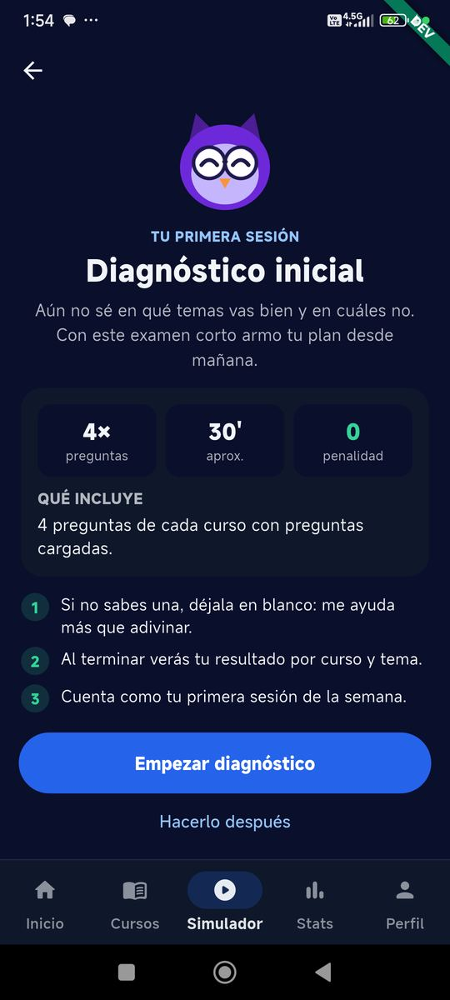
Diagnóstico inicial
| Mensaje | Qué pasa realmente |
|---|---|
| «Aún no sé en qué temas vas bien y en cuáles no. Con este examen corto armo tu plan desde mañana.» | — |
| «4× preguntas» · «30' aprox.» · «0 penalidad» | 4 preguntas de cada curso con preguntas cargadas ADMIN. Los 30 min son solo un texto: el diagnóstico no tiene reloj (cierra a las 4 h). |
| Consejos 1-3 («déjala en blanco…», «verás tu resultado por curso y tema», «cuenta como tu primera sesión») | Cuenta como sesión solo si junta 10 o más preguntas (3 cursos o más). |
| «Empezar diagnóstico» · «Hacerlo después» | Al terminar se vuelve al inicio del Simulador. |
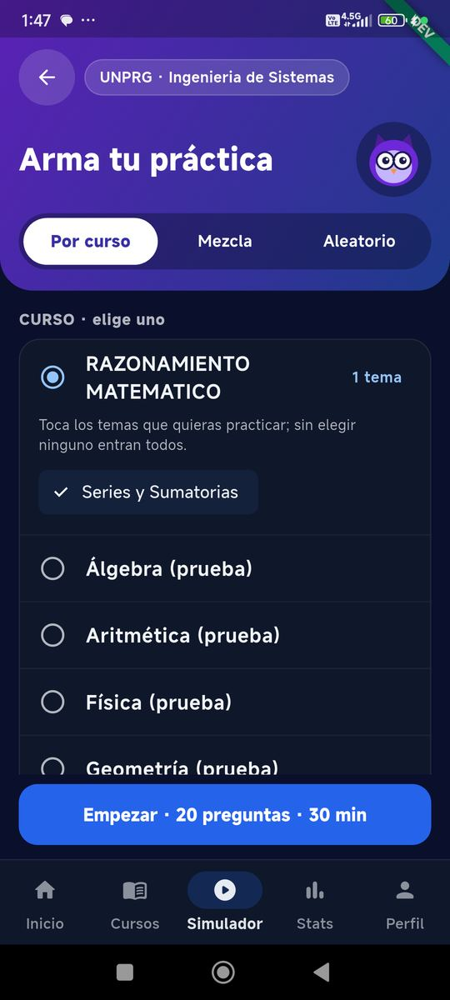
Arma tu práctica
| Mensaje | Cuándo aparece |
|---|---|
| Pestañas «Por curso» · «Mezcla» · «Aleatorio» | Cambiar de pestaña borra los temas elegidos. |
| «CURSO · elige uno» / «CURSOS · elige 2 o más» | Por curso / Mezcla (máximo 10). |
| «Te damos preguntas de hasta 3 de tus cursos, elegidos al azar.» | Aleatorio. |
| «Toca los temas que quieras practicar; sin elegir ninguno entran todos.» · «todos los temas» / «{n} temas» | Por curso, con curso elegido. |
| «¿CUÁNTO TIEMPO TIENES?» Corto 10 · 15 min · Normal 20 · 30 min · Largo 40 · 60 min | Tamaños ADMIN. No se escribe la cantidad. |
| «Con reloj» / «Sin reloj respondes a tu ritmo.» | Activado por defecto ADMIN. |
| «Elige un curso» / «Elige al menos 2 cursos» (botón gris) | Falta elegir. |
| «Empezar · 20 preguntas · 30 min» | Listo. Primero salen preguntas no vistas en 14 días ADMIN; si faltan, se repiten. |
| «Aún no hay cursos disponibles.» | Sin cursos. |
El examen se titula «Práctica · {tamaño}» y el resultado se muestra en % de aciertos.
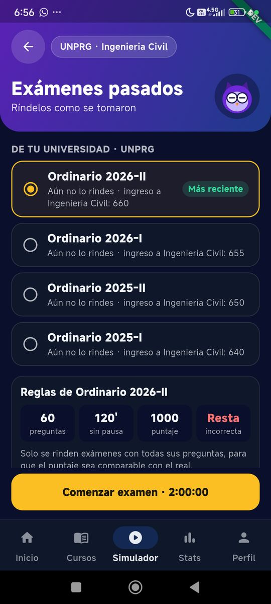
Exámenes pasados
| Mensaje | Cuándo aparece | Al tocar |
|---|---|---|
| «DE TU UNIVERSIDAD · UNPRG» | Exámenes activos con reglas del Simulador, del más nuevo al más viejo. | — |
| «Ordinario 2026-II» + «Más reciente» | Título = modalidad + año + periodo; la insignia va en el primero. | Lo selecciona. |
| «Aún no lo rindes» / «Tu mejor: {n}» | Según tu mejor puntaje guardado en el servidor. | — |
| «· ingreso a {carrera}: {n}» | Si el admin cargó el mínimo de tu carrera para ese examen. | — |
| 🔒 «Pronto · cargamos {x} de {y} preguntas» | Solo si el admin desactiva «ocultar incompletos» (por defecto se ocultan). | No se puede tocar. |
| «Reglas de {examen}»: preguntas · minutos «sin pausa» · puntaje · «Resta» / «No resta» incorrecta | Examen seleccionado. | — |
| «Solo se rinden exámenes con todas sus preguntas, para que el puntaje sea comparable con el real.» | Siempre con reglas. | — |
| «OTRAS UNIVERSIDADES · para practicar más» | Si el admin lo permite y hay otras universidades visibles (aparecen aunque no tengan exámenes). | Abre sus exámenes, sin nota de ingreso. |
| «Aún no hay exámenes pasados completos de esta universidad.» | Sin exámenes, o el perfil no tiene universidad. | — |
| «Comenzar examen · 2:00:00» | Con examen elegido. | Crea el examen. |
Con orden «original», las preguntas salen como en el examen real (1, 2, 3…); si no, se mezclan preguntas y alternativas.
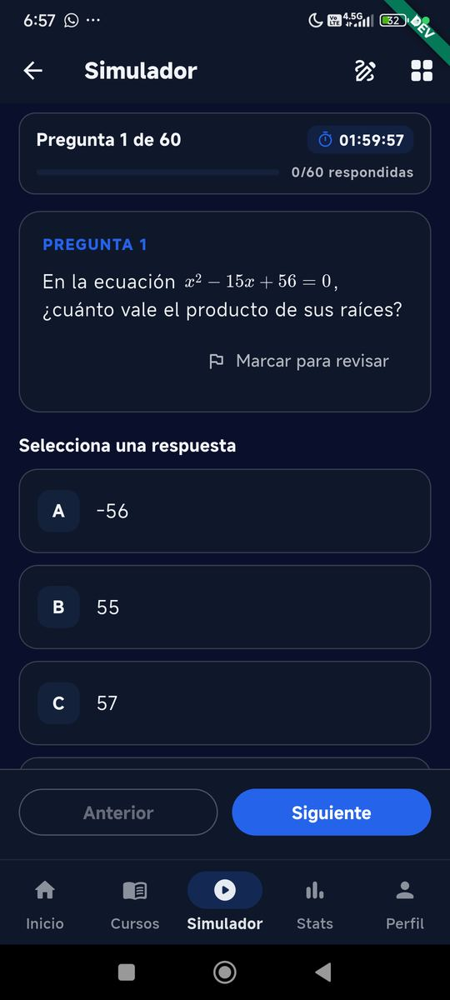
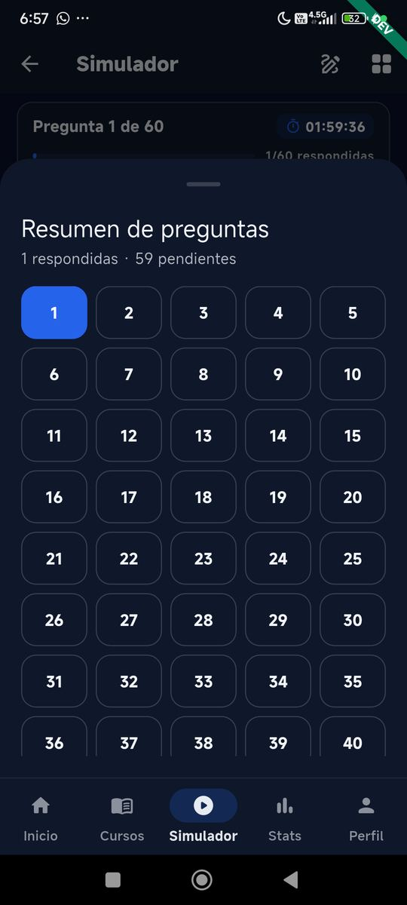
Durante el examen
| Mensaje | Cuándo aparece |
|---|---|
| «Preparando tus preguntas» | Mientras el servidor arma el examen (espera hasta 20 s). |
| «EXAMEN PASADO» / «PRÁCTICA» · título · «Antes de comenzar» | Intro. El reloj empieza al tocar «Comenzar examen». Si el examen ya había empezado (retomado), el botón dice «Continuar examen». |
| «Duración · Sin reloj» / «Duración 02:00:00» / «Tiempo restante» | Sin reloj, con reloj sin empezar, o examen retomado. |
| «Puedes marcar preguntas para volver a ellas, usar la pizarra… Si se acaba el tiempo, se entrega solo.» | Siempre en el Simulador. |
| «Pregunta {n} de {t}» · reloj · «{a}/{t} respondidas» | Durante el examen. |
| «Pregunta tomada de {examen}» | Todo menos examen pasado. |
| «Marcar para revisar» / «Quitar marca» | Las marcas se pierden si pausas. |
| Lápiz «Pizarra» · cuadrícula «Resumen de preguntas» | La pizarra es por pregunta y se pierde al salir. El resumen colorea: actual (azul), marcada (ámbar), respondida, pendiente. |
| «Tus respuestas siguen seleccionadas · No pudimos respaldarlas por ahora… · Reintentar» | Falló el guardado automático. |
| «¿Entregar examen?» / «¿Pausar tu examen?» | Igual que en la guía. |
| «Se acabó el tiempo. Entregamos tu examen con lo que marcaste.» | Fin del reloj: se entrega solo. Si esa entrega falla (sin red), no hay forma de reintentar. |
| «Estamos revisando tus respuestas. En un momento verás tu resultado.» | Mientras se califica. |
Resultado
| Mensaje | Cuándo aparece |
|---|---|
| «{examen} · examen pasado» · «{puntaje} de {1000}» | Examen pasado. Puntaje = redondeo(máx(0, bruto) × 1000 ÷ (N × puntos por correcta)); todo bien = 1000. |
| «+{n} vs. anterior» / «−{n} vs. anterior» / «Igual que la vez anterior» | Si ya habías rendido ese examen. |
| Anillo «{p}%» · «{c} de {t}» · «{min} min» | Práctica, plan, diagnóstico y errores. |
| «¿Te alcanzaba para {carrera}?» · barra «Ingreso {x}» / «Tú {y}» | Examen pasado de tu universidad con mínimo cargado para tu carrera. Sin mínimo, la tarjeta no aparece. |
| «¡Te alcanzaba! · Superaste el mínimo por {n} puntos.» | Puntaje ≥ mínimo. |
| «Te faltaron {n} puntos · Son unas {k} respuestas correctas más.» | Puntaje < mínimo. k = techo(n × preguntas ÷ 1000). |
| «{c} correctas · {i} incorrectas · {b} en blanco» | Siempre. |
| «Por curso y tema» | Una barra por curso: verde ≥ 70 %, ámbar ≥ 50 %, rojo debajo. |
| «Lo que más te restó: {tema} ({c} de {t})» · «Ir a la guía» | El tema con más fallos o blancos. «Ir a la guía» abre el subtema y la parte de esa pregunta. |
| «Revisar respuestas» · «Practicar mis {n} errores» / «Volver al Simulador» | El segundo botón depende de si hubo errores o blancos. |
Revisión, Mis errores, historial y estadísticas
- Revisión por pregunta: filtros «Falladas · En blanco · Correctas · Todas» con su número (abre en Falladas), un mapa con una casilla por pregunta (roja fallada, gris en blanco, verde correcta; al tocarla abre esa pregunta) y una tarjeta por pregunta. Cerrada muestra «Pregunta {n} · Incorrecta» (o «En blanco»), una línea del enunciado y «Marcaste B · era C»; abierta, el enunciado, todas las alternativas con su letra y, debajo, «TU RESPUESTA» en rojo o «CORRECTA» en verde («TU RESPUESTA · CORRECTA» si acertaste), la «Explicación» (se oculta si el admin apaga las explicaciones ADMIN; en una fallada puede pedir el video) y «Ver en la guía», que cierra el resultado y abre el subtema y la parte de esa pregunta.
- Practicar mis errores: examen «Mis errores» con lo que fallaste o dejaste en blanco, hasta 100 preguntas, mezcladas y en la misma versión. Lleva reloj (90 s por pregunta) solo si el original lo tenía.
- Tu progreso e historial:
- Cabecera: el búho y «En tus últimos {n} exámenes acertaste en promedio el {p} % de las preguntas.» ({n} hasta 10). Con 2 o más exámenes, un gráfico «% de preguntas acertadas en cada examen»: una barra por examen (del más antiguo al último, resaltado), la línea punteada del promedio y «hace {n} exámenes · - - promedio: {p} % · el último: {u} %». La barra más alta llena el gráfico. La cabecera se va con el desplazamiento.
- «TU ÚLTIMO EXAMEN»: título, fecha, % y «{c} correctas · {f} falladas · {b} en blanco»; «Revisar» abre su revisión y «Practicar {n} errores» (si hubo falladas o en blanco) abre «Mis errores» sin reloj.
- «Refuerza estos temas»: los 3 temas con menos aciertos («{c} de {r}») con «Practicar»; «Ver los {n}» muestra todos y «Ver menos» los vuelve a ocultar.
- Totales de todos tus exámenes: «exámenes», «preguntas» y «de acierto» (exactos aunque tengas miles: los suma el servidor).
- «Historial · últimos {n}» · «toca para revisar»: {n} lo fija el admin («Exámenes en el historial», 10 de fábrica) ADMIN. Filtros «Todos / Plan / Libre / Oficial» y cada examen con «{c} de {t} · fecha y hora» y su puntaje o %; tocarlo muestra «Abriendo la revisión…» con el búho y abre su revisión. Los exámenes más antiguos no se borran: siguen contando en los totales y Stats.
- Arriba, la bandera «Editar meta» y «Ver estadísticas».
- Vacío: «Aún no entregas exámenes en el Simulador.».
Al bajar: totales y «Historial · últimos 10»; cada examen abre su revisión. - Stats: precisión, preguntas y simulacros por periodo, y cursos fuertes y por mejorar, calculados con tus resultados del servidor. Vacío: «Aún no hay estadísticas · Rinde tu primer simulacro…» con «Ir al Simulador».
Mis errores (banco de errores y misión del día)
Toda pregunta que el alumno falla o deja en blanco en cualquier examen del Simulador entra a «Mis errores»; sale a «Corregidas» cuando la acierta (en cualquier examen) las veces seguidas que pide el admin («Aciertos para salir», 1 de fábrica) ADMIN. Los errores del reto de hoy esperan a mañana para no revelar respuestas.
| Mensaje | Cuándo aparece |
|---|---|
| «MISIÓN DE HOY» · «Corrige {n} errores» · «Llevas {d} de {n} · +{xp} XP al completarla» | Con errores por repasar y la misión encendida. {n} y {xp} los fija el admin (5 y 15 de fábrica) ADMIN. Las barritas muestran lo corregido hoy (día de Perú). |
| «Empezar la misión» / «Seguir la misión · {f} más» | Abre la hoja «Practicar mis errores». |
| «MISIÓN DE HOY · CUMPLIDA» · «{n} de {n} corregidos» · «Mañana tendrás una nueva. Puedes seguir si quieres.» · «Seguir corrigiendo» | Ya cumplió la misión hoy. |
| «Repasa lo que fallaste» · «Practicar · {n}» | Con la misión apagada por el admin. |
| «{n} por repasar · {c} corregidas · {d} días de misión» | Contadores. «corregidas» abre la lista; «días de misión» es la racha (días seguidos cumpliéndola). |
| «TUS CURSOS» · «Practicar todo ›» · «{n} por repasar · {c} corregidas» | Un curso por fila, el que más tiene primero, con su barra verde (corregidas) sobre roja. Tocarlo abre el curso. |
| «{n} errores del reto de hoy podrás practicarlos desde mañana.» | Hay errores del reto del día. |
| «¡No tienes errores!» · «Hoy no hay misión. Cuando falles una pregunta del Simulador, aparecerá aquí.» · «Ir al Simulador» · «Un examen pasado» | Banco vacío. |
| «Mis errores no está disponible por ahora.» | El admin lo apagó ADMIN. |
Hoja «Practicar mis errores»: «Todos los cursos · {n} por repasar» (o el curso/tema). «¿CUÁNTAS?»: lo que falta de la misión («cierra la misión»), 10 y 20, sin pasar de lo disponible ni de «Práctica más larga» (20) ADMIN. «ORDEN»: «Más falladas primero» o «Mezcladas». «Con reloj» (90 s por pregunta), apagado de fábrica. «Cada acierto la saca de tus errores: +{x} XP. Si cierras la misión, +{m} XP más.» · «Empezar · {n} preguntas». Sin penalidad.
- Curso: cabecera con el curso y «Misión {d}/{n}»; «Tu avance en {curso}» · «{c} de {t} corregidas»; «POR TEMA» con «{n} por repasar» y «Practicar {n}»; «LAS QUE MÁS TE CUESTAN»: las 5 más falladas con su enunciado (fórmulas incluidas), «Fallada {n} veces» o «En blanco» y cuándo; abajo «Practicar {curso} · {n}».
- Corregidas: «{n} · Errores que ya dominas», «ESTA SEMANA» (barras de lunes a domingo) y las últimas corregidas con «{curso} · {hoy/ayer/hace n días}, en Mis errores / en la práctica del día / en el reto del día / en el diagnóstico / en un examen pasado / en una práctica». «Se guardan las últimas 50. Si vuelves a fallar una, regresa a «Mis errores».»
- Al terminar un examen del Simulador: «{n} se sumaron a Mis errores» (o «Corregiste {n} errores») · «Y corregiste {c}: tu misión va {d} de {n}.» con las barritas, «Cerrar la misión» (abre la hoja) y «Ver Mis errores». Al practicar desde «Mis errores»: «Corregiste {c} de {t}»; si cumple la misión, «¡Misión cumplida!» con el búho celebrando, «Corregiste {n} errores hoy. Te quedan {r} por repasar.», la racha y «Seguir corrigiendo». El XP sale en «Ganaste XP»: «{n} errores corregidos» (+3 c/u, tope 30 al día) y «Misión del día» (+15) ADMIN. Si responde demasiado rápido no gana XP, pero el banco sí cambia.
- Inicio: el mosaico dice «Misión {d}/{n} · {r} por repasar» con barritas, «Misión cumplida ✓» o «Estás al día». Progreso → Resumen: tarjeta «Tus errores» con los tres contadores y «Donde más fallas: {curso} ({n})».
Tu universidad en la app (colores, «cachimbo», ¿habrías ingresado?)
Si el admin carga la Identidad de la universidad ADMIN (Universidades → ficha → «Identidad»), la app se viste con ella. Sin identidad, todo queda como siempre.
| Dónde | Qué cambia |
|---|---|
| Todos los búhos | Bufanda con el color principal y una raya del secundario. Sin escudos ni logos oficiales. |
| Chip de la cabecera «UNPRG · Ingeniería de Sistemas» | Un puntito con los dos colores. |
| Inicio → «Tu examen · 32 días · para ser {cachimbo}» | Con fecha confirmada, en vez de la fecha. {cachimbo} es «Cómo llamar al ingresante»; vacío: «ingresante». Fecha por confirmar: sigue «por confirmar». |
| «¡Subiste de rango!» | El búho lleva birrete (borla del color secundario), el confeti suma los colores de la universidad y el mensaje es la frase del admin («Un paso más cerca de la UNPRG, Kevin.»). Nuevo botón «Compartir». |
| «Compartir» | Imagen tipo historia: «ME ESTOY PREPARANDO PARA · UNPRG», la carrera, el búho con birrete, rango, días seguidos y días al examen, y «{usuario} · con IngresoYa» (nunca el nombre real). |
| Examen pasado: «¡Con este puntaje habrías ingresado a {carrera}!» · «¿Y en otras carreras?» | Si «¿habrías ingresado?» está encendido. Debajo, hasta 4 carreras con su ingreso, las más cercanas a tu puntaje (✓ alcanzaba, – no). |
| «¡Misión cumplida!» de Mis errores | El búho celebra con birrete. |
Mensajes de error del Simulador
Al crear un examen salen como aviso abajo; al entregar, en rojo. Al guardar respuestas nunca hay aviso, solo la franja «Reintentar».
| Mensaje | Cuándo aparece |
|---|---|
| «Este examen aún no tiene suficientes preguntas disponibles. Vuelve más tarde.» | No hay preguntas suficientes para lo pedido. |
| «Este examen no está disponible por ahora. Elige otro.» | Examen pasado oculto, inactivo o incompleto; curso, tema o tamaño no disponible. |
| «Completa la universidad en tu perfil antes de tomar este examen.» | Perfil sin universidad. |
| «No pudimos conectarnos. Revisa tu internet e inténtalo nuevamente.» | Sin red. |
| «Está tomando más tiempo de lo esperado. Reintenta para continuar con tu examen.» | 20 s sin respuesta. Reintentar no duplica el examen. En «Hoy te toca», mientras la sesión de hoy siga abierta, tocar otra vez abre la misma. |
| «El tiempo de este examen terminó.» / «Este intento ya fue enviado. Puedes consultar su resultado.» | Examen vencido o ya entregado. |
| «No pudimos calificar este examen. Avísanos si vuelve a ocurrir.» | Falta la clave de alguna pregunta. |
| «No pudimos continuar ahora. Vuelve a intentarlo en unos momentos.» | Cualquier otro error, incluido «Mis errores» sin preguntas disponibles. |
GUÍA DEL BÚHO
Recorridos del búho
La primera vez que el alumno entra a la app y a cada sección, el búho (con la bufanda de su universidad) le explica cómo funciona: oscurece la pantalla, ilumina la pieza con un aro que late, la lleva a la vista si está más abajo y habla desde un globo con «Siguiente» y «Saltar». Gestos: saluda, señala, explica y celebra. Lienzo: https://claude.ai/artifact/5fKmk6QjuQNpSXvKUKXvSz. Contrato: docs/tours_contract.md.
| Guía | Cuándo se abre | Pasos |
|---|---|---|
| Bienvenida | La primera vez en el Inicio. | «¡Hola, {nombre}! Soy tu búho guía.» («Empecemos») · Inicio · Guía · Simulador · Progreso · Perfil («¡Listo, a estudiar!», «¡Vamos!»). |
| Guía de estudio | Primera vez en Guía. | «Tus cursos» (primer curso) · «Avanza parte por parte» (completados y dominados). |
| Simulador | Primera vez en Simulador. | «Tus simulacros» · «El reto del día» (se salta si el reto está apagado) · «Elige tu examen». |
| Mis errores | Primera vez en Mis errores. | «Tu misión del día» · «Tus números» · «Repasa por curso». |
| Rankings | Primera vez en Rankings. | «Tu liga y el reto» (pestañas) · «Tu liga semanal». |
| Progreso | Primera vez en Progreso. | «Tu progreso» (pestañas) · «¿Cuánto te falta?». |
| Perfil | Primera vez en Perfil. | «Tu rango» · «¿Quieres verlo otra vez?» (tarjeta Recorridos del búho). |
- Se abre sola una guía por sesión ADMIN («Guías por sesión», 1 de fábrica); las demás esperan a la próxima vez.
- «?» en la cabecera de cada sección: la vuelve a abrir cuando quieras.
- Perfil → «Recorridos del búho»: «Ya viste {n} de 7 guías.» · «Ver la bienvenida» · «Mostrar todas otra vez» («Listo: el búho te volverá a guiar en cada sección.»).
- Admin: Configuración → «Recorridos del búho» (encender, animar, guías por sesión, versión, cada guía y, en «Más opciones», el título, texto y gesto de cada paso) ADMIN.
SONIDOS
Sonidos de logros
La app suena solo al completar algo: nunca en medio de una pregunta ni durante el simulacro (suena en la pantalla de resultado). Familia «Campanita»: campanas suaves que crecen con el logro. Lienzo: https://claude.ai/artifact/2E7GTptcH6pLFAPmymMbrC. Contrato: docs/sounds_contract.md.
| Nivel | Cuándo suena | Sonido |
|---|---|---|
| 1 · Pequeño | Tarjeta «Ganaste XP»; resultado con preguntas corregidas de «Mis errores». | «Ding» de dos notas (0,4 s). |
| 2 · Medio | Misión del día cumplida; «¡Parte completada!»; «¡Logro conseguido!» del subtema; nueva estrella de rango. | Tres notas que suben (0,8 s). |
| 3 · Grande | «¡Subiste de rango!»; tema completado; ascenso de liga al cerrar la semana. | Fanfarria corta (1,6 s). |
| 4 · Dominio | «¡Dominaste …!»; llegar a Maestro. | Brillo único, reservado como el dorado (2,2 s). |
- Celular en silencio: no suena ni vibra. En vibración: solo vibra. No pausa la música del alumno.
- Un sonido a la vez: si llegan varios logros juntos suena solo el mayor; el nivel 1 no se repite antes de 3 s ADMIN.
- Perfil → «Sonidos de logros»: «Sonidos» («Suenan solo al completar algo. Con el celular en silencio no suenan.»), «Vibración» («Un pulso corto al celebrar, también en modo vibración.») y «Probar».
- Admin: Configuración → «Sonidos de logros» (sonidos activos, volumen 70 %, vibración, pausa del nivel 1 y cada nivel) ADMIN. Los sonidos vienen dentro de la app: sin lecturas.
PERFIL
Rango de perfil y XP
El alumno gana XP con todo lo que hace en la app. Su rango sale del XP total y nunca baja. El XP lo da solo el servidor, una vez por cada logro, y llega solo: el alumno no tiene que tocar nada.
Cómo se gana XP
| Qué hace el alumno | XP | Límite |
|---|---|---|
| Revisa una sección de una parte | +2 | 1 vez por sección |
| Aprueba el examen de una parte | +40 | 1 vez por parte |
| Completa un subtema (plata) | +80 | 1 vez |
| Domina un subtema (oro) | +150 | 1 vez |
| Entrega una sesión del Simulador de 10 preguntas o más | +10 | tope diario |
| Cada respuesta correcta a una pregunta que no vio en 14 días | +1 | tope diario |
| Diagnóstico inicial | +30 | 1 vez |
| Examen pasado completo | +50 | 1 vez cada 7 días por examen |
| Supera su mejor puntaje en un examen pasado | +1 cada 10 pts | máx. +50 |
| Día con sesión que cuenta | +5 | 1 por día, tope diario |
| Cumple su meta semanal de sesiones | +50 | 1 por semana |
- Tope diario: 300 XP ADMIN para lo que se repite (sesiones, respuestas correctas y días de racha). Los logros únicos no tienen tope.
- Sesión apurada: una sesión respondida a menos de 5 s por pregunta en promedio ADMIN no da XP.
- El día y la semana son los de Perú: el día empieza a medianoche de Lima y la semana, el lunes.
- XP de antes: los alumnos que ya tenían partes, subtemas o simulacros recibieron ese XP una sola vez, de forma retroactiva.
En el Perfil
| Mensaje | Cuándo aparece | Al tocar |
|---|---|---|
| Insignia + «Zafiro I» + «3.450 XP» + barra + «450 XP para Zafiro II» | Siempre que hay sesión. La barra va del umbral del rango actual al del siguiente. | Abre «Tu camino de rangos». |
| «Maestro III ★2» + «1.500 XP para la estrella 3» | Después del último rango, una estrella cada 2.000 XP ADMIN. | Igual. |
| «Esta semana ganaste +310 XP», con Guía de estudio, Simulador y Constancia | Suma los XP de la semana de Perú, agrupados. Si no hay: «Aún no ganas XP esta semana. Estudia una parte o rinde un examen en el Simulador.». | — |
| «Todos los rangos · Mira el camino a Maestro» | Debajo de la tarjeta del rango. | Abre «Tu camino de rangos». |
| «Rankings · Postulante · 8° esta semana» (o «aún sin puntos esta semana») | Al lado, solo si el admin encendió los rankings ADMIN. | Abre «Rankings». |
| «Cómo ganar más XP» | Con los valores del admin. | — |
| Preferencias → «Nombre de usuario y privacidad» con el nombre de usuario («Puma_Civil_42», o «… · oculto en los rankings») | Siempre. | Abre «Tu nombre de usuario». |
Tu camino de rangos
Los 18 escalones, de Bronce I a Maestro III, con su insignia. Cada fila muestra «Logrado» (verde), «Actual» (azul, resaltada) o el XP desde el que se llega (atenuada). Al final, la fila de estrellas («Luego, una estrella cada 2.000 XP · sin límite») y la nota «Tu rango nunca baja: sube con todo lo que haces en la app.».
| Rango | I | II | III |
|---|---|---|---|
| Bronce | 0 | 150 | 350 |
| Plata | 600 | 900 | 1.250 |
| Platino | 1.650 | 2.100 | 2.600 |
| Zafiro | 3.200 | 3.900 | 4.700 |
| Amatista | 5.600 | 6.600 | 7.700 |
| Maestro | 9.000 | 10.500 | 12.000 |
Los nombres, umbrales e imágenes se cambian en el admin ADMIN. Las insignias (paquete RhosGFX, licencia CC0) vienen en la app; el admin elige cuál usa cada escalón.
Al terminar un examen
| Mensaje | Cuándo aparece |
|---|---|
| «Ganaste XP» · «+29 XP» con desglose («Sesión completada +10», «14 correctas nuevas +14», «Día de racha +5»…) | En el resultado del Simulador y del examen de la parte o de dominio, si esa entrega dio XP. Las secciones revisadas se agrupan en una línea («5 secciones revisadas +10»). |
| Insignia + «Zafiro I · 3.498 / 3.900» + barra | Debajo del desglose. |
| «Hoy llevas 160 de 300 XP posibles por día en sesiones, respuestas y racha.» | Si la entrega tuvo XP con tope diario. |
| «Llegaste al tope de hoy: parte del XP de esta sesión no se sumó.» | Si el tope recortó algo. |
«¡Subiste de rango!»
| Mensaje | Cuándo aparece |
|---|---|
| «¡SUBISTE DE RANGO!» · insignia anterior → nueva · nombre del rango · «Tu nueva insignia ya aparece en tu perfil.» · búho: «Siguiente: {rango} en {N} XP.» · «¡Genial!» / «Ver todos los rangos» | Una sola vez por rango y cuenta, en el Inicio, el Perfil o el resultado de un examen. Si subió varios escalones a la vez, una sola celebración con el último. |
| «¡NUEVA ESTRELLA!» · «Ya tienes N estrellas sobre tu insignia.» | Al ganar una estrella después del último rango. |
| «Llegaste al rango más alto. Ahora cada 2.000 XP suma una estrella.» | Al llegar a Maestro III. |
Animación ADMIN: la insignia anterior brilla y tiembla, gira como una moneda y se convierte en la nueva con un destello, un anillo, rayos de luz, vibración y confeti; luego entran los textos, el búho salta y a la izquierda queda la insignia anterior con una flecha (unos 3 s). Con una estrella nueva, la insignia queda quieta: una estrella entra volando, la etiqueta pasa de ★N-1 a ★N con chispas y un confeti pequeño. Tocar la insignia salta al final. Sin animación (ajuste «Animación al subir de rango» apagado, o el teléfono con «reducir movimiento») se ve directamente la pantalla final, sin confeti.
Si el admin revierte XP y el rango baja, no hay mensaje.
Nombre de usuario
Todos los alumnos tienen un nombre de usuario: es lo único que los demás ven en los rankings, junto a la insignia del rango. Nunca se muestra el nombre real, el correo ni las respuestas.
| Dónde | Mensaje | Cuándo aparece |
|---|---|---|
| Onboarding, paso 3 de 5 | «Elige tu nombre de usuario» · «Así te verán en los rankings. Nunca mostramos tu nombre real.» · campo con uno sugerido («Animal_Carrera_NN») · «Otro al azar» · «Lo elijo después» | Siempre. «Lo elijo después» se queda con el sugerido. La confirmación (paso 5) lo muestra. El servidor lo revisa al terminar; si lo rechaza, vuelve a este paso con el motivo. |
| Inicio (una vez) | «Tu nombre de usuario» · «Te asignamos {nombre}. Así te verán en los rankings; puedes cambiarlo cuando quieras en tu Perfil.» · «Cambiarlo» / «Entendido» | Alumnos que ya tenían cuenta (se les generó uno al azar) o que no lo eligieron por falta de conexión. |
| Inicio (una vez) | «El equipo de IngresoYa retiró tu nombre de usuario anterior ({motivo}). Te asignamos uno nuevo; puedes cambiarlo aquí.» + el nuevo | Si el admin retiró su nombre de usuario. |
| Perfil → «Tu nombre de usuario» | Campo · «Otro al azar» · «Ocultarme de los rankings» (apagado: «Apareces con tu nombre de usuario y tu insignia.»; encendido: «Juegas igual y ves tu puesto, pero los demás te ven como «Postulante oculto».») · «Los demás ven / Nunca ven» · «Compites en UNPRG · Ingeniería Civil, según tu perfil.» · «Guardar» → «Listo, guardado.» | Siempre. |
| Errores del nombre | «El alias debe tener de 3 a 20 caracteres.» · «Usa solo letras, números y _ (sin espacios), con al menos una letra.» · «Ese alias no está permitido. Prueba con otro.» · «No uses tu nombre ni tu correo en el alias.» · «Ese alias ya lo usa otro alumno.» | Los dos primeros los revisa la app; el resto, el servidor (palabras prohibidas de fábrica + las del admin ADMIN). |
Rankings: «Mi liga» y «Reto de hoy»
Rankings tiene dos pestañas arriba, «Mi liga» | «Reto de hoy» (la segunda solo con el reto encendido ADMIN; un punto ámbar avisa que hoy no lo jugaste). Se abre desde el atajo «Rankings» del Inicio (con el búho de tu etapa y su nombre), la tarjeta del Perfil, la tarjeta del reto del Simulador y el resultado del reto (estas dos abren «Reto de hoy»). La barra de abajo marca la pestaña desde la que entraste. Arriba: ⓘ abre «Cómo funciona la liga» y el escudo, tu nombre de usuario.
Solo existe cuando el admin enciende los rankings ADMIN (de fábrica están apagados). La liga semanal mide el XP que ganas de lunes a domingo (hora de Lima) frente a un grupo de unos 30 alumnos ADMIN de tu misma etapa: Aspirante → Postulante → Finalista → Ingresante ADMIN. La etapa no es el rango del perfil: el rango solo sube; la etapa sube o baja cada semana.
- Entrar a un grupo: al ganar tu primer XP de la semana entras al primer grupo de tu etapa con cupo; si está lleno, se abre otro (por orden de llegada). Sin XP, no ocupas lugar.
- Cierre: domingo a medianoche. Suben ~15 % ADMIN (al menos 1) y bajan ~15 % ADMIN; en grupos de menos de 5 ADMIN nadie baja. Nadie baja de Aspirante ni sube de Ingresante. Empates: más XP primero; si empatan, quien entró antes.
- Al encenderlos, la liga empieza el lunes siguiente y todos arrancan en Aspirante.
| Mensaje | Cuándo aparece |
|---|---|
| Cabecera morada: el búho de tu etapa · «ETAPA 2 DE 4» · «Postulante» · «Termina el domingo · quedan 3 días» | Siempre. El búho evoluciona con la etapa: polluelo que sale del cascarón (1.ª), con su lápiz, con lentes, alas y medalla, y feliz con birrete y alas arriba (última); el marco gana anillos, laureles, rayos y brillos. Con más o menos etapas ADMIN se reparten esos 4 aspectos. No usa las insignias de rango (esas van junto a cada persona). |
| «Gana tu primer XP de la semana para entrar a tu liga» · «Estudia una parte o haz una sesión del Simulador: te pondremos en un grupo de {etapa}.» | Si esta semana aún no tiene XP (en la cabecera). |
| «3° de 7 en tu grupo» · barra hacia la zona de subida · «Con 171 XP más entras a los que suben a Finalista.» / «Vas en zona de subida a {etapa}. ¡Mantente!» / «Estás en zona de bajada: con {N} XP más sales de ella.» (barra roja) / «Estás en la etapa más alta. ¡Defiende tu lugar!» | Con grupo. La barra se llena con tu XP frente al del último que sube. |
| Podio con los 3 primeros (insignia de rango, nombre, «410 XP», escalones 2-1-3; «Tú» si estás ahí) y debajo las filas desde el 4.°: puesto · insignia · nombre · XP · ↑ (sube) / ↓ (baja); «Tú · …» resaltado; «Postulante oculto» sin insignia | Todo el grupo; con menos de 3, solo filas. |
| «↑ suben 1» · «↓ bajan 1» · «Tabla de la semana ›» | Bajo el grupo; el enlace abre «Esta semana» si el admin lo deja activo ADMIN. |
| Hoja «Cómo funciona la liga» (ⓘ): las etapas con su búho (la tuya resaltada) · «Tu búho evoluciona con cada etapa. Cada lunes entras a un grupo de hasta 30 alumnos…» · «Ganas XP con la guía, el Simulador, la racha y el reto del día (+20).» · «El domingo a medianoche suben los primeros (15 %) y bajan los últimos (15 %).» · «Entendido» | Al tocar ⓘ. Tamaño del grupo, bono y porcentajes salen del admin ADMIN. Reemplaza la tarjeta «Cómo ganas puntos». |
| «Esta semana»: pestañas UNPRG / «Mi carrera» · «Tu puesto: 4° de 12» destacado arriba · filas con círculo de color para los 3 primeros · sin puesto: el búho con «Gana tu primer XP de la semana y aparece en la tabla.» · «Estudiar una parte» | «Aún hay pocos de tu carrera aquí.» solo en la pestaña de la carrera (antes salía también en la de la universidad). Sin nadie con XP: «Todavía nadie tiene puntos aquí.» |
| El lunes, una vez, en pantalla completa: al subir, «Postulante → Finalista», tu búho tiembla, destella y aparece el de la nueva etapa · «¡Subiste a Finalista!» · «¡Tu búho evolucionó!»; si te mantienes o bajas, el búho de esa etapa sin animación · «Te mantienes en Postulante» / «Bajaste a Aspirante» · «La semana pasada quedaste {p}° de {n} en tu grupo. ¡Esta semana empiezas de cero!» · «¡Vamos!» | Al abrir Rankings después del cierre. |
| «Los rankings todavía no están disponibles.» | Si el admin los apagó. |
Reto del día
Un mini examen diario de 10 preguntas ADMIN iguales para toda tu universidad, con 15 min ADMIN y un solo intento. Aparece en Rankings y en el Inicio del Simulador (solo con los rankings encendidos).
- Preguntas: el servidor arma el reto la primera vez que alguien de la universidad lo abre ese día. Siempre trae preguntas de exámenes pasados de esa universidad (hasta 6 ADMIN; al menos 1 si existen); el resto, de exámenes de otras universidades o propias de IngresoYa, repartidas entre los cursos. No repite preguntas de sus retos de los últimos 30 días ADMIN.
- Horario: hay que empezarlo antes de medianoche (Lima); al empezar a las 23:55 igual tienes tus 15 min.
- Puntaje: gana quien acierta más; si empatan, quien tardó menos.
- XP: como una sesión del Simulador (sesión, aciertos nuevos, racha) +20 de bono ADMIN; todo suma a la liga.
- Respuestas: se ven al día siguiente, para que nadie se las pase a quien aún no juega.
| Mensaje | Cuándo aparece |
|---|---|
| Rankings → «Reto de hoy», sin jugar: «RETO DE HOY · 27/10» · «47 ya jugaron. ¿Entras al podio?» (o «Sé el primero en jugar hoy») · «10 preguntas · 15:00 minutos · +20 XP» · «Jugar el reto» · «Un solo intento: al empezar, ya cuenta.» · «PODIO DE HOY» (los 3 primeros con «10/10 · 5:48») · «Juega para ver tu puesto y la tabla completa.» | Hoy no lo jugó. El podio y el total salen de una consulta de conteo y 3 filas. |
| Rankings → «Reto de hoy», jugado: placa «12°» «de 47» · «TU RESULTADO · 27/10» · «8/10 · 6:42» · «+20 XP · las respuestas se ven mañana» · UNPRG / «Mi carrera» · podio y filas · «Gana quien acierta más; si empatan, quien tardó menos.» | Ya lo jugó hoy. |
| «Ayer» / «Reto de ayer: 7/10» · «Ver respuestas» · «Ver tabla ›» | Al pie de «Reto de hoy»: la tabla final de ayer y, si jugaste, sus respuestas. |
| «Reto del día» · «10 preguntas iguales para todos · cierra a medianoche» · «Jugar» | Tarjeta del Inicio del Simulador, si hoy no lo jugó. |
| «Hecho · 8/10 · 6:42» · «Ver tabla» | Ya lo jugó hoy; «Ver tabla» abre Rankings en «Reto de hoy». |
| «Reto de ayer: 7/10» · «Ver respuestas» · «Ver tabla» | Si jugó ayer: las respuestas con su explicación y la tabla final. |
| Intro «Reto del día» · «10 preguntas» · «15:00» · «Un solo intento: al empezar, ya cuenta. Gana quien acierta más; si empatan, quien tardó menos. Las respuestas se ven mañana.» | Antes de empezar (pantalla del examen del Simulador, con reloj). |
| Resultado: puntaje, correctas / incorrectas / en blanco, «Ganaste XP» (con «Reto del día +20») · «Mañana verás las respuestas y la tabla final.» · «Ver la tabla de hoy» · «Volver» | Al entregar. Ese día no se muestran «Revisar», «Practicar mis errores», «Por curso y tema» ni el tema más débil, porque revelarían las respuestas (el servidor también rechaza practicar esos errores). |
| Tabla «Reto del día · 15/10» con pestañas UNPRG / «Mi carrera» · «Tu puesto: 12° de 47» · filas «8/10 · 6:42» | La carrera es la del perfil al jugar; su pestaña se llena desde 5 jugadores ADMIN. |
| «Ya jugaste el reto de hoy. Vuelve mañana.» · «Hoy no hay reto para tu universidad.» · «Elige tu universidad en el Perfil para jugar el reto.» | Segundo intento · sin preguntas suficientes · perfil sin universidad. |
ADMIN
Panel de administración
El admin se rehízo en fases (rediseño aprobado en el lienzo, versión 3.1). Esta sección se completa en cada fase con capturas reales del panel.
Marco, menú e Inicio
| Elemento | Cuándo aparece | Al tocar |
|---|---|---|
| «Estás en PRUEBAS (TEST): los cambios solo los ven las cuentas de prueba.» | Siempre, arriba de todo, mientras el admin apunte a las colecciones -test. En producción dirá «Estás en PRODUCCIÓN: lo que cambies lo ven todos los alumnos.» en rojo. | Nada. |
| Menú: Inicio · CONTENIDO (Cursos, Banco de preguntas, Plantillas de examen, Universidades y exámenes, Carreras) · AJUSTES (Configuración) | Siempre en pantallas anchas (desde 1000 px); en angostas se abre con ☰. | Va a la sección. |
| «Contenido / Banco de preguntas» | Barra superior: grupo y sección actual. | Nada. |
| Luna / sol (tema) | Siempre en la barra superior, a la derecha del «?». | «Automático (como el sistema)», «Claro» u «Oscuro». Se recuerda en ese navegador; el cambio es inmediato y no se pierde lo que se estaba escribiendo. La vista previa «Así la ve el alumno» no cambia: siempre se ve como la app. |
| «?» | Siempre en la barra superior. | Abre «¿Para qué sirve esta sección?», con «Lo más usado» y «Abrir la guía completa» (esta guía, en la parte del admin). |
| Inicio: «Cargar preguntas», «Armar un curso», «Exámenes pasados» | Siempre. | Abren el Banco de preguntas, Cursos y Universidades. |
| Correo y «Cerrar sesión» | Pie del menú. | Cierra la sesión. |
Perfiles y permisos
| Elemento | Cuándo aparece | Al tocar |
|---|---|---|
| Perfiles de fábrica: Dueño, Editor de contenido, Revisor, Soporte a alumnos, Solo lectura | Siempre; «N personas» cuenta las activas con ese perfil. | Muestra su tabla de permisos. |
| Tabla «Ver · Crear y editar · Publicar · Archivar / borrar» por sección | Con permiso de editar perfiles, las casillas se pueden marcar (el Dueño no se edita). «pide revisión» bajo Publicar cuando el perfil edita pero no publica. | Al cambiar algo aparece «Cambios sin guardar en este perfil · Descartar · Guardar perfil». |
| «Ver el admin como este perfil →» | Siempre. | Abre el admin con el menú de ese perfil y la franja azul «Estás viendo el admin como «…». Puedes moverte por el menú; nada de lo que veas se puede tocar ni se guarda.» · «Salir de la vista previa». |
| «Invitar persona» | Con permiso de editar perfiles. | Correo de Google, perfil, «Limitar a ciertos cursos» y «Excepciones para esta persona». Si la cuenta ya existe, queda activa; si no, «Invitación lista» (vence en 14 días). |
| «Personas con acceso»: perfil, «Solo N curso(s)», excepciones, «activo hoy / ayer / hace N días», «aún no entra», «acceso quitado» | Siempre. | «Cambiar», «Quitar acceso» (cierra su sesión; no a ti mismo ni al último Dueño), «Devolver acceso»; invitaciones: «vence en N días» · «Cancelar». |
| «Solo lectura: tu perfil puede ver esta sección, pero no cambiarla.» | En una sección que tu perfil ve pero no edita. | — |
| «Tu perfil no tiene acceso a esta sección» | Si se abre la dirección de una sección sin permiso de ver (el menú ya no la muestra). | — |
| «…no tiene acceso al admin. Pide a un Dueño que te invite con este correo.» | Al entrar con una cuenta sin ficha ni invitación. | «Cerrar sesión». |
Enviar a revisión
| Mensaje | Cuándo aparece | Al tocar |
|---|---|---|
| «Enviar a revisión» (en lugar de «Publicar») | Formulario de pregunta, si tu perfil no puede publicar. | Valida, guarda el borrador y lo deja «En revisión». «Enviada a revisión. Te avisaremos en «Mi trabajo» si la devuelven.» |
| «En revisión: espera a que alguien con permiso de publicar la revise.» | Al abrir tu pregunta enviada. | — |
| «Enviada a revisión por {correo}. Revísala y publícala, o devuélvela con un comentario.» · «Devolver con comentario» | Al abrirla quien puede publicar. | «Publicar» la publica y cierra la revisión; «Devolver» pide el comentario. |
| «Devuelta por {correo}: «{comentario}». Corrígela y vuelve a enviarla.» | Al abrir una pregunta devuelta. | — |
| «Esta pregunta está publicada. Para cambiarla hace falta permiso de publicar…» | Pregunta publicada y tu perfil no publica. | Sin botones de guardar. |
| Inicio: «Por revisar · N» / «Mis envíos a revisión» con «Devuelta» y «En revisión» | Según puedas publicar o solo editar preguntas. | Abre la pregunta. |
Carga rápida de preguntas
| Elemento | Cuándo aparece | Al tocar |
|---|---|---|
| «Se queda fijo para las siguientes:» Curso · Tema · Subtema · Parte · «Dificultad: …» | Siempre, arriba. Se eligen una vez y valen para todas las preguntas de la sesión. Desde una parte se abre ya fijada. | Lista para elegir. |
| «Pega todo junto: enunciado y alternativas. Nosotros las separamos.» | Siempre. | Reconoce a) b) c), A. B. C., (a) (b), «Clave: B» / «Rpta: b» (marca la correcta), «Solución: …» (llena la explicación) y $…$ como fórmula. |
| «ASÍ QUEDÓ · HAZ CLIC EN LA CORRECTA» | Al pegar texto. | Clic o Alt+1…5 marca la correcta. |
| «No encontramos alternativas. Escríbelas como a) … b) … o en líneas A. … B. …» | Si el texto no trae alternativas reconocibles. | — |
| «Parecida a «…» (ya existe en este subtema). ¿Es otra pregunta?» | Si el enunciado se parece en un 60 % o más a otro del mismo subtema. | — |
| «Guardar y siguiente» (Ctrl+Enter) | Siempre. | Guarda la pregunta como borrador con su clave y deja el cuadro listo para la siguiente. Si falta algo: «Elige curso, tema, subtema y parte arriba.», «Falta el enunciado.», «Marca la alternativa correcta.»… |
| «Así la ve el alumno · ● en vivo» con «Examen de la parte» / «Simulador» | Al pegar texto. | Cambia la cabecera y la pestaña como en la app. |
| «{parte}: N publicadas de M que pide su examen» | Con una parte elegida que tiene plantilla. | — |
| «Esta sesión · N guardadas», «sin explicación», «Editar» | Tras guardar. | «Editar» abre el formulario completo. |
| «Publicar las N» / «Enviar las N a revisión» | Con preguntas guardadas en la sesión, según el perfil. | Publica (o envía a revisión) todas; las que fallan quedan en la lista. |
| Formulario completo: «Ver como la ve el alumno» | Siempre. | Muestra el teléfono con la pregunta y «Esta pregunta puede aparecer en: Guía de estudio → … → Examen de la parte · Simulador → Arma tu práctica → … · Reto del día…». |
Salud del contenido, cursos y partes
| Mensaje | Cuándo aparece | Al tocar |
|---|---|---|
| «Bloquean al alumno» · «Le restan calidad» · «Partes listas {n} de {total}» | Inicio, si el perfil ve Cursos. Lee el reporte que guarda el servidor; se recalcula solo si cambió una pregunta, un curso, un tema, un subtema o una plantilla, y con «Revisar ahora». «Revisado hace…» dice cuándo se calculó. Revisa todas las partes activas de cursos activos. | — |
| ««{subtema} · {parte}» no tiene examen» — «La parte nunca se completa…» | Parte activa sin plantilla de examen. | «Resolver →» abre la parte. |
| «El examen de «…» pide {N} preguntas y el banco tiene {M}» — «…verá un error y no podrá aprobarla. Faltan {N−M}.» | La plantilla pide más preguntas publicadas de las que hay para esa parte. | Abre la parte («Cargar {N−M} preguntas aquí»). |
| «…usa una plantilla que no existe o no está publicada» | Plantilla borrada, inactiva o no publicada. | Abre la parte. |
| ««…» sin video, lección, ejemplos» — «Funciona, pero el alumno tiene menos con qué estudiar…» | Falta el enlace del video, la lección (contenido/resumen/puntos clave) o los ejemplos. | Abre la parte. |
| ««{subtema}» no tiene examen de dominio» | Subtema con partes y sin plantilla de dominio. | Abre el curso. |
| Menú: «Cursos {N}» en rojo (o ámbar) | Hay problemas que bloquean (o solo de calidad). | — |
| Curso: «{x} de {y} partes listas · {z} con problemas», columnas Video · Lección · Ejemplos · Examen ({publicadas}/{pide}) · Estado (lista, mejorable, bloquea, oculta) | Al abrir un curso desde Cursos. | Clic en la parte abre su editor; «…» renombra, duplica, sube/baja, oculta a los alumnos o elimina. |
| «+ Tema», «+ Subtema», «+ Parte» | Con permiso de editar cursos. | Escribes el nombre y Enter; el cuadro sigue abierto para el siguiente (Esc o × para terminar). Las partes nuevas nacen con la plantilla del curso. |
| «Plantilla de parte del curso: …» · «Cambiar» | Siempre. | Elige la plantilla que reciben las partes nuevas. |
| «Pegar un temario» — «Se crearán N tema(s), M subtema(s) y K parte(s)» | Con permiso de editar. | Crea la estructura (sin contenido). También acepta 1. / 1.1 / 1.1.1 y viñetas. |
| «Copiar estructura de otro curso» | Con permiso de editar. | Copia nombres de temas, subtemas y partes al final del curso. |
| Parte: «LO QUE VE EL ALUMNO, EN ORDEN» (Video, Lección, Ejemplos, Repasar, Recursos, Repaso relámpago, Examen de la parte) | Al abrir una parte. | Muestra el elemento; «Editar» abre el editor completo de la parte. |
| «Para publicar falta» / «Para mejorarla» · «Cargar N preguntas aquí» | Si la parte tiene problemas. | Abre la carga rápida fijada en esa parte. |
| «Publicar · faltan N cosas» / «Publicar» / «Ocultar a los alumnos» | Con permiso de publicar cursos. Publicar = la parte vuelve a estar visible para los alumnos. | Muestra u oculta la parte. |
Configuración en lenguaje simple
| Elemento | Cuándo aparece | Al tocar |
|---|---|---|
| Temas: Rankings y ligas · Reto del día · Cómo gana XP el alumno · Niveles e insignias · Simulador de examen · Plan de entrenamiento · Guía de estudio · XP de un alumno | Siempre, a la izquierda. Un número ámbar indica cambios sin guardar en ese tema. | Abre el tema. |
| «¿Qué quieres cambiar?» | Siempre. | Busca en todas las preguntas, sin importar tildes (p. ej. «reloj», «cuántos suben»). |
| Cada ajuste es una pregunta («¿Qué porcentaje del grupo sube de etapa?») con su explicación | Siempre. | Al tocarlo, la columna «Dónde lo ve el alumno» marca en naranja la zona de la captura real. |
| «En la práctica: En un grupo de 30, los 5 primeros suben de etapa y los 5 últimos bajan…» | En los ajustes que tienen un efecto calculable; se recalcula con lo que escribes (mismo redondeo que el servidor). | — |
| «Guardado: X · volver» · «De fábrica: X» / «valor de fábrica» | Al cambiar un valor / siempre. | «volver» deja el valor guardado. |
| «Suave · Recomendado · Competitivo · A medida» | Rankings y ligas. | Llena «suben», «bajan» y «alumnos por grupo» de una vez. |
| «Ajustes avanzados (N)» · «Más opciones: …» | Si el tema los tiene. | Muestra los ajustes poco usados y el editor completo anterior (rangos, etapas, palabras prohibidas, tamaños de práctica, sesiones por semana, nombres de usuario y reto de hoy), que guarda con su propio botón. |
| «N cambios sin guardar · «Suben de liga» 15 % → 20 % … · Descartar · Guardar en TEST» | Con cambios pendientes. | Valida con las mismas reglas que la app y el servidor y guarda. «Guardado. La app lo aplica la próxima vez que lee la configuración (normalmente al abrirse).» Si algo está fuera de rango, el ajuste se marca en rojo («Mínimo 5 alumnos.»). |
Historial de cambios
| Mensaje | Cuándo aparece | Al tocar |
|---|---|---|
| «{persona} cambió {elemento} · {campo}: {antes} → {ahora} (+N)» · «archivó» · «creó» · «eliminó» · «restauró» | Cada cambio en preguntas, cursos (temas, subtemas, partes), plantillas, universidades, carreras, configuración y personal, agrupado por día (HOY, AYER, fecha). «Sistema» si lo hizo el servidor. Los campos de Configuración se muestran con el nombre de su pregunta («Suben de liga»). | Muestra el detalle. |
| Filtros: Todo · Configuración · Preguntas · Cursos · Universidades · Personal · Archivados y eliminados; buscador | Siempre. | Filtra la lista. |
| Detalle: tabla «Campo · Antes · Ahora» | Al elegir un cambio. | — |
| «Restaurar valor anterior» / «Recuperar» | Si tu perfil puede editar esa sección y el cambio se puede deshacer. | Deshace el cambio; «Restaurado. También quedó anotado en el historial: se puede volver a deshacer.» |
| «Cambió después de este registro» · «Restaurar igual» | Si el elemento se modificó después. | Restaura igual y se pierden los cambios posteriores. |
| «Para deshacer una creación, elimínalo desde su sección.» · «Una pregunta publicada no se restaura así: edítala y publica una versión nueva.» · «Este cambio es demasiado grande…» | Cuando no se puede restaurar desde aquí. | — |
Preguntas a revisar
| Mensaje | Cuándo aparece | Al tocar |
|---|---|---|
| «Detectadas con las respuestas de los alumnos. Solo cuentan las preguntas respondidas al menos {N} veces…» · «Respuestas sumadas hasta {fecha} · se actualiza cada noche.» | Siempre. N y los demás umbrales se cambian en Configuración → Preguntas a revisar. | «Actualizar ahora» suma los exámenes entregados desde la última vez. |
| «El {x} % la falla y el {y} % elige {C}. Es probable que la clave marcada ({A}) esté mal.» | Error ≥ 90 % y una incorrecta se lleva ≥ 50 %. | «Abrir y corregir» abre la pregunta. |
| «El {x} % la falla, pero las respuestas se reparten: parece difícil…» · «El {x} % acierta: es muy fácil…» · «Nadie elige {D}: esa alternativa no distrae.» | Según las reglas de la tabla del contrato. | «Abrir la pregunta». |
| «Qué eligieron ({n} respuestas, {b} en blanco)» con barras por alternativa (la correcta en verde) | En cada pregunta. | — |
| «Está bien así» | Con permiso de editar preguntas. | La pasa a «Revisadas» hasta que tenga un 50 % más de respuestas. |
Ficha del alumno
| Mensaje | Cuándo aparece | Al tocar |
|---|---|---|
| «Correo, nombre de usuario o uid» | Buscar alumno. | Con un solo resultado abre su ficha; si no, la lista. «No encontramos a nadie…» |
| Cabecera: nombre, correo · universidad · carrera, «Nombre de usuario: …», «Oculto en los rankings», «{rango} · {XP} XP», «Liga: {etapa}» | Siempre. | «Retirar nombre de usuario» pide motivo; la app le asigna otro y le muestra el motivo. |
| Resumen: «Guía de estudio · {n} partes aprobadas», «Simulador · {n} exámenes · {x} % de acierto promedio», «Esta semana · {xp} XP», «Última actividad» | Pestaña Resumen. | — |
| «Exámenes · {n}» y «Libro de XP» con «Revertir» | Pestañas. | «Revertir» pide motivo: el alumno pierde esos XP y el evento no se vuelve a otorgar. |
Importar examen pasado
| Paso | Qué pasa |
|---|---|
| 1 · Elegir examen | Universidad y examen de origen (si no existe, se crea en Universidades). |
| 2 · Pegar | Se pega el texto del PDF: preguntas numeradas, alternativas y, al final, «CLAVES 25. C 26. B …». |
| 3 · Revisar | «{n} preguntas detectadas (n.º x a y) · {listas} · {por revisar} · Clave encontrada al final del documento: sí/no». Avisos por pregunta: «Solo se detectaron 4 alternativas (falta la E).», «Tiene una figura: súbela con el editor completo después de importar.», «Falta la clave: márcala aquí.». Se marca la clave tocando la alternativa, se escribe la explicación y «Así está bien» acepta los demás avisos. |
| 4 · Clasificar | Curso · subtema · parte sugeridos comparando con las preguntas ya clasificadas; dificultad común (fácil / media / difícil). |
| 5 · Publicar | «Crear las {n} preguntas»: las que tienen clave, explicación y parte se publican (o se envían a revisión); las demás quedan en borrador. Resumen: «Se crearon {n} pregunta(s): {p} publicadas, {d} en borrador…». |
Noticias
| Parte | Qué hace | |
|---|---|---|
| Configuración → Plan Premium | Premium encendido y exámenes pasados gratis por día (0 = sin límite). Los ID de las suscripciones (premium_monthly, premium_yearly) y sus precios viven en Play Console. | Apagado · 3 |
| Alumnos → ficha → «Regalar premium» / «Quitar premium» | Suma 7/30/90/365 días con motivo, o corta el premium con motivo; lo escribe el servidor y queda en la bitácora del alumno. | — |
| Alumnos → Noticias | Lista con «Todas / Publicadas / Programadas / Borradores / Vencidas / Archivadas» y «Nueva noticia». | |
| Contenido | Categoría (Aviso, Examen de admisión, Novedad de la app, Consejo), título (4–90) y texto. | |
| Imagen (opcional) | PNG/JPG/WebP hasta 2 MB, mejor vertical 4:5; «Describe la imagen (obligatorio)»; «Solo imagen» para comunicados (el texto queda opcional). | |
| Prioridad | Normal · Fijada · Urgente. Fijada y urgente piden vencimiento. Urgentes: máximo {n} por semana para la misma audiencia (Configuración → Noticias, fábrica 1). | |
| ¿A quién va dirigida? | General (todos) o Por universidad (una o varias). Explica que los demás solo la ven en «Otras universidades». | |
| Fechas | Publicar ahora o programar; vencimiento; cuenta regresiva (fecha y «¿Qué pasa ese día?»); fechas clave. | |
| Historia, botón y notificación | «Mostrar también como historia» con «Nombre en la historia (opcional)», hasta 24 letras, y el color si no hay imagen; la vista previa muestra el círculo como en la cabecera del Inicio; botón «Abrir una web» o «Abrir una sección de la app»; «Enviar notificación al teléfono» (una sola vez). | |
| «Así la ve el alumno» | Vista previa con las piezas reales de la app: Ventana, Inicio y Lista (con lo que ven los de otras universidades). | |
| Botones | «Publicar ahora» / «Programar» / «Guardar cambios» (permiso de publicar), «Guardar borrador», «Archivar», «Eliminar» (permiso de borrar). Sin permiso de publicar: «Guárdala como borrador y pide a alguien con permiso de publicar que la revise.». | |
| Universidades → ficha → «Próximo examen de admisión» | Nombre, fecha y hora del examen: la cuenta regresiva del Inicio. Avisa «ya pasó: actualiza la fecha». |
Cursos, Banco de preguntas, Plantillas, Universidades, Carreras y Configuración mantienen por ahora su funcionamiento; las fases siguientes las rehacen (ver la tabla de abajo para qué controla cada una).
Lo que se cambia en el admin
| Dónde (admin) | Qué controla | Fábrica |
|---|---|---|
| Configuración → Revisión de la guía | Exigir tiempo y % de video; % mínimo de video; segundos mínimos por sección. | Sí · 60 % · 5 s |
| Cursos → Partes | Contenido de cada parte (video, lección, ejemplos, tarjetas, quiz, recursos), su examen y si está activa. | — |
| Cursos → Subtemas | Examen de dominio («Examen integrador») del subtema. | — |
| Plantillas de examen | Preguntas, duración y % para aprobar de cada examen de parte o dominio. | 60 min si no tiene duración |
| Configuración → Simulador | Tamaños de práctica, reloj por defecto, penalidad, días sin repetir, origen y dificultad, otras universidades, ocultar incompletos, explicaciones. | 10/20/40 · sí · no · 14 · ambos · mixta · sí · sí · sí |
| Configuración → Plan de entrenamiento | Sesiones por semana y recomendada, tamaño de la sesión, % de temas débiles, umbral y respuestas mínimas, diagnóstico, «¿Por qué?», día de simulacro, hora de recordatorio, mínimo para contar sesión, gracia de la racha, si cuentan los exámenes libres, tope de partes de la guía por día. | 3/5/7 · 5 · 10 preg./15 min · 60 % · 50 % y 5 · 4 por curso · sí · sábado · 19:00 · 10 · 1 día · sí · 3 |
| Configuración → XP y rangos | Escalera de rangos (nombre, XP desde, imagen), estrellas y XP por estrella, XP por evento (0 lo desactiva), tope diario, mínimo de preguntas por sesión, días para no repetir, segundos mínimos por pregunta, cada cuántos días un examen pasado da XP. | 18 escalones · sí · 2.000 · ver tabla · 300 · 10 · 14 · 5 · 7 |
| Configuración → Rankings | Interruptor general (con «Alumnos que ganaron XP esta semana» para decidir); etapas, alumnos por grupo, % que sube y baja, mínimo para bajar, grupos por universidad, «Esta semana» y su mínimo por carrera; reto: activo, preguntas, minutos, bono, preguntas de exámenes pasados propios, días sin repetir, mínimo de la pestaña de carrera; palabras prohibidas. | Apagado · Aspirante…Ingresante · 30 · 15 % / 15 % · 5 · no · sí · 5 · sí · 10 · 15 · 20 · 6 · 30 · 5 |
| Configuración → Nombres de usuario y reto de hoy | Buscar un nombre de usuario o uid y retirarlo con motivo (la app le asigna otro al azar y le explica por qué); ver quiénes se ocultaron; ver el reto de hoy de cada universidad y cambiar una pregunta si nadie lo entregó aún. | — |
| Configuración → XP de un alumno | Buscar por correo o uid, ver su XP, rango, semana y libro de movimientos, y revertir un evento con motivo (no se vuelve a otorgar). | — |
| Configuración → Noticias | Avisos urgentes por semana (0 los desactiva), días que una historia queda en el Inicio y cuántas caben. | 1 · 7 · 5 |
| Configuración → Anuncios | Anuncios encendidos, banner en Inicio / Cursos / Simulador / Stats / Perfil / Noticias / Rankings, minutos entre anuncios de pantalla completa (0 = en cada examen), primer examen del día sin anuncio, videos recompensados. | Apagado · las siete · 0 · No · Sí |
| Alumnos → Noticias | Las noticias, su audiencia, prioridad, fechas, imagen, historia, botón y notificación. | — |
| Universidades → ficha → Próximo examen de admisión | Fecha de la cuenta regresiva del Inicio. | Sin fecha |
| Universidades → Exámenes de origen → Reglas del Simulador | Preguntas, duración, puntaje máximo, puntos por correcta/incorrecta/blanco, orden, disponible y mínimos de ingreso por carrera. «Visible en el Simulador» por universidad. | — |
Están fijos en el código y convendría pasarlos al admin: la pausa de 24 h de la invitación al dominio y los 30 min de vigencia del contenido guardado.
Observaciones abiertas
Cosas que hoy funcionan distinto de lo esperado. Se tachan aquí cuando se corrigen.
| # | Observación | Dónde |
|---|---|---|
| 1 | Guía | |
| 2 | Inicio | |
| 3 | El puntaje del Repaso relámpago puede pasar a la siguiente parte que también tenga quiz. | Guía |
| 4 | El aviso «Dedica al menos N segundos…» sale aunque la sección ya estuviera revisada. | Guía |
| 5 | Un enlace de video que no es de YouTube cuenta como requisito pero no aparece en la ruta: la parte nunca se completa. | Guía |
| 6 | Inicio | |
| 7 | El diagnóstico anuncia «30' aprox.» y «0 penalidad», pero no tiene reloj y la penalidad depende del admin. | Simulador |
| 8 | Sin mínimo de ingreso cargado, el resultado de un examen pasado no explica nada sobre el ingreso. | Simulador |
| 9 | Las marcas y la pizarra se pierden al pausar. | Simulador |
| 10 | Si falla la entrega automática al acabarse el tiempo, no hay forma de reintentar. | Simulador |
| 11 | Simulador | |
| 12 | Simulador | |
| 13 | El recordatorio diario solo guarda la hora: aún no hay notificaciones. | Simulador |
Historial de cambios
- 29-oct-2026 · Estados de carga: al volver a la app, Inicio ya no dice «¡Estás al día!» ni «Sin fecha», y el Reto del día ya no dice «Jugar» antes de saberlo. Se muestra lo último guardado en el teléfono con «Actualizando» o, sin nada guardado, un esqueleto con brillo. Sección nueva Mientras carga con capturas.
- 29-oct-2026 · Sonidos de logros: campanas suaves al ganar XP, completar la misión, una parte o un subtema, subir de rango o de liga y al dominar; en silencio no suenan y en vibración solo vibran. Interruptores en Perfil y ajustes en Configuración. Capturas nuevas.
- 29-oct-2026 · Recorridos del búho: la primera vez en la app y en Guía, Simulador, Mis errores, Rankings, Progreso y Perfil, el búho (con la bufanda de tu universidad) ilumina cada pieza y la explica con gestos animados; «?» en cada sección y Perfil → «Recorridos del búho» para repetirlas. Textos y encendido en Configuración. Capturas nuevas.
- 29-oct-2026 · Tu universidad en la app: el búho lleva la bufanda con los colores de tu universidad, el chip un puntito, «Tu examen» dice «para ser cachimbo», la subida de rango trae birrete, confeti con tus colores, la frase de tu universidad y «Compartir» (tarjeta tipo historia), y el examen pasado dice «¿habrías ingresado?» con otras carreras. Todo se configura en Universidades → «Identidad». Capturas nuevas.
- 29-oct-2026 · «Mis errores»: banco con lo que fallas en el Simulador y misión del día «Corrige 5 errores» (con XP y racha), pantallas del curso y «Corregidas», hoja para practicar, tarjeta en el resultado, mosaico del Inicio y tarjeta en Progreso. Ajustes nuevos en Configuración → «Mis errores». Capturas nuevas.
- 23-oct-2026 · Guía de estudio ordenada por el examen de la carrera: con las «Áreas del examen» del admin (grupos académicos del prospecto, preguntas y puntos por asignatura, cursos clave), Cursos muestra «Clave para tu examen», «También vienen en tu examen» y «No vienen en tu examen». «Lo que más te acerca» de Estadísticas usa esas preguntas. Cargado para la UNPRG (prospecto 2026-II, Anexo 1).
- 22-oct-2026 · «¡Subiste de rango!» animado: la insignia anterior brilla, gira como moneda y se convierte en la nueva con destello, rayos, vibración y confeti; la estrella nueva entra volando a su etiqueta. Tocar la insignia salta al final; se apaga en el admin (Niveles e insignias → «Animación al subir de rango») y con «reducir movimiento». Captura nueva.
- 19-oct-2026 · Admin: «Salud del contenido» ahora sale de un reporte que guarda el servidor y se recalcula solo cuando cambia el contenido. Se ve igual y casi no gasta lecturas. Abrir un curso también lee mucho menos.
- 19-oct-2026 · «Tu progreso e historial» renovado: promedio de los últimos 10 exámenes y su gráfico en la cabecera, «Tu último examen» con «Revisar» y «Practicar N errores», los 3 temas más flojos con «Ver los N», totales exactos de todos los exámenes y los últimos 10 (ajuste del admin «Exámenes en el historial») con revisión al tocarlos. «Tus simulacros» y Stats cuentan todos los exámenes. Abrir una revisión muestra «Abriendo la revisión…».
- 19-oct-2026 · Admin: cada ajuste de Configuración explica para qué sirve (41 descripciones nuevas). «Segundos entre guardados» acepta 0 para guardar solo por respuestas, al salir y al entregar. El Simulador lee el historial de resultados con una sola lectura; el alumno no ve cambios.
- 19-oct-2026 · Candado del video renovado: tarjeta compacta con el degradado de la cabecera y el búho guiñando, «Desbloquea la explicación · Ganas +5 XP · te quedan 25 XP hoy», «Ver video · +5 XP» y «Premium». Ver el video completo da XP (5 por explicación, tope de 25 al día, una vez por pregunta, ajustables en el admin) y abre la explicación con el búho feliz y «¡Así se resuelve!».
- 19-oct-2026 · Revisión por pregunta renovada (examen de parte, de dominio y Simulador): filtros «Falladas · En blanco · Correctas · Todas», mapa de casillas para saltar a cualquier pregunta, tarjeta que se entiende cerrada («Marcaste B · era C» y el inicio del enunciado), todas las alternativas marcadas al abrirla (rojo la tuya, verde la correcta, gris en blanco) y, en el Simulador, «Ver en la guía» por pregunta.
- 19-oct-2026 · Anuncios: el banner va también en Cursos, Simulador (portada), Stats y Perfil (siete pantallas, cada una con su interruptor en Configuración → Anuncios) y se comparte entre pestañas para aparecer al instante; el anuncio de pantalla completa sale al terminar cada examen, antes del resultado (de fábrica sin espera ni primer examen libre; ambos siguen siendo ajustes del admin). App #123, admin #107.
- 29-oct-2026 · Barra de abajo N5: «Cursos» pasa a «Guía» y «Stats» a «Progreso»; avisos con las partes de hoy (Guía) y la racha (Progreso) y tu inicial en Perfil. En el admin, Configuración → Anuncios usa los mismos nombres. Captura del Inicio nueva.
- 28-oct-2026 · Inicio: las historias pasan a la cabecera («NOVEDADES · Ver todas ›») con su nombre corto en vez de la categoría, y los atajos son cuatro mosaicos de color con una línea de estado (lienzo https://claude.ai/artifact/UsM2hc7LMjh2Aua6FCGFgW, «E ajustada» e «Historias en la cabecera»). Admin: «Nombre en la historia». Capturas nuevas.
- 28-oct-2026 · Rankings renovado (lienzo https://claude.ai/artifact/75ZcsgNe2yxgUL7hbgLdmX): pestañas «Mi liga» | «Reto de hoy», cabecera con el búho que evoluciona por etapa, podio del grupo, ↑ / ↓ por fila, hoja «Cómo funciona la liga», el reto con invitación y podio antes de jugar y tu puesto después, «Esta semana» con tu puesto destacado y el búho cuando no tienes puesto, aviso del lunes en pantalla completa con la evolución del búho, y atajos de Inicio y Perfil con el búho de tu etapa. Corregido: la barra marcaba «Perfil» al abrir Rankings desde Inicio, y «Aún hay pocos de tu carrera aquí» salía en la pestaña de la universidad.
- 27-oct-2026 · «Tu plan de hoy» compacta (Inicio y Simulador): cabecera en una línea con «Mi semana ›», cada tarea con título y detalle de una línea, botones más pequeños, sin la frase del ritmo (queda en Tu semana) y sin el chip de días en el Inicio. Capturas nuevas.
- 27-oct-2026 · Onboarding con plan de estudio opcional (paso 4 de 5): las mismas preguntas de Tu meta, «Guardar mi plan» o «Lo armo después en el Simulador», y la confirmación muestra el plan elegido. Tu meta y el onboarding comparten el mismo formulario.
- 23-oct-2026 · Plan personalizado (app #137, admin #121): fecha única del examen (universidad o mes de la meta «por confirmar»), «Tu plan de hoy» en Inicio y Simulador (parte de la guía que toca, cursos clave primero, ritmo con tope configurable, práctica del día), pantalla «Tu semana», «Tu meta» corta con vista previa del ritmo y sin recordatorio, y la práctica del día elige cursos según su peso en el área del examen. Probado en el teléfono; capturas nuevas. Corregido: «{n} %» ya no se parte en dos líneas y el chip del día del examen dice «tu examen es hoy».
- 19-oct-2026 · Probado en el teléfono (TEST): banner de prueba en el Inicio, pantalla Premium, tarjeta del Perfil, premium regalado (sin banner), «Restaurar compras» y el aviso del tope diario de exámenes pasados; capturas reales en «Anuncios» y «Plan Premium». Corregido el banner que tomaba media pantalla y dejaba el Inicio vacío (app #122).
- 19-oct-2026 · Plan Premium (Fase 5B de costos): tarjeta en el Perfil, pantalla
/profile/premiumcon los dos planes de Google Play, restaurar compras y estado vigente; tope diario de exámenes pasados para la cuenta gratuita con aviso «Exámenes pasados de hoy»; «O hazte Premium» bajo el candado del video; el premium apaga anuncios, candados y topes. En TEST las compras siguen deshabilitadas (sin Play Console); el admin regala premium desde la ficha del alumno. - 18-oct-2026 · Anuncios de AdMob (Fase 5A de costos): banner al pie de Inicio, Noticias y Rankings; anuncio de pantalla completa al salir de un resultado (primer examen del día libre, mínimo 10 min entre dos); video para ver la explicación de una pregunta fallada; nada en lección, examen, simulador ni historias; todo apagable desde Configuración → Anuncios. Capturas pendientes de la prueba en el teléfono.
- 17-oct-2026 · Probado en el teléfono (TEST): ventana del aviso urgente, Inicio, historias, lista, «Otras universidades», detalle, visor de imagen y notificación (abre el detalle). Capturas reales.
- 17-oct-2026 · Noticias del admin (ventana del aviso urgente por universidad, fijada, historias, lista con «Otras universidades», detalle, imagen a pantalla completa y notificación) y nuevo Inicio (días al examen, % de la guía con ritmo, pendientes, historias y atajos). Admin: Alumnos → Noticias, Configuración → Noticias y «Próximo examen de admisión».
- 16-oct-2026 · Admin: tema oscuro (selector Automático / Claro / Oscuro en la barra superior).
- 16-oct-2026 · Admin, fase 7: «Preguntas a revisar» (señales según las respuestas, umbrales en Configuración), «Ficha del alumno» (avance, exámenes, XP con revertir, retirar nombre de usuario) e «Importar examen pasado» (pegar, revisar, clasificar con sugerencias, publicar).
- 16-oct-2026 · Admin, fase 6: «Historial de cambios» con antes/después, filtros, «Restaurar valor anterior» y «Recuperar» (preguntas archivadas y elementos eliminados).
- 16-oct-2026 · Admin, fase 5: Configuración en lenguaje simple (preguntas, «En la práctica», valor guardado y de fábrica, buscador, preajustes, barra única de guardado) con capturas reales de la app y la zona que cambia cada ajuste.
- 16-oct-2026 · Admin, fase 4: «Salud del contenido» en Inicio y contador en el menú; un curso como árbol con el estado de cada parte, alta en línea, pegar temario, copiar estructura y plantilla de parte; editor de parte con lo que falta y «Cargar N preguntas aquí».
- 16-oct-2026 · Admin, fase 3: «Carga rápida» de preguntas (pegar y seguir, clave y solución reconocidas, aviso de repetidas, publicar o enviar a revisión en bloque) y «Así la ve el alumno», generada desde el código de la app.
- 16-oct-2026 · Admin, fase 2: «Perfiles y permisos» (perfiles de fábrica, tabla de permisos, invitar, excepciones, alcance por curso, ver como perfil), menú según el perfil y «Enviar a revisión» con «Mi trabajo» en Inicio.
- 16-oct-2026 · Admin, fase 1 del rediseño: tema claro, menú por tareas, aviso de entorno TEST y ayuda «?» por sección. Nueva sección «Panel de administración».
- 16-oct-2026 · XP fase 3: nombre de usuario para todos (onboarding, Perfil, «Ocultarme de los rankings»), «Rankings» con «Mi liga» (etapas Aspirante → Ingresante, grupos semanales, «Esta semana» por universidad y carrera) y «Reto del día»; se retira el top 100 de la fase 2. Admin «Rankings» y «Nombres de usuario y reto de hoy». Probado en el teléfono (el reto trajo preguntas del examen UNPRG 2025 I); el resultado del reto oculta ese día lo que revela respuestas.
- 15-oct-2026 · Pendientes antes de Play Console: un solo % del curso, «Tienes un examen sin terminar · Retomar» en el Simulador, «Hoy te toca» sin duplicados y botón «Continuar examen». Observaciones 1, 9 (en parte) y 11 corregidas.
- 15-oct-2026 · XP fase 2: «Los más dedicados» (top 100), «Rankings y privacidad» con alias, accesos en el Perfil; admin «Top 100 y alias». Capturas del teléfono.
- 15-oct-2026 · Rango de perfil y XP (fase 1): cómo se gana XP, Perfil, «Tu camino de rangos», «+N XP» al terminar y celebración; admin «XP y rangos» y «XP de un alumno» (app y admin «XP fase 1»). Capturas tomadas en el teléfono.
- 15-oct-2026 · Primera versión. Reúne la guía del Simulador y la de la Guía de estudio que estaban en el lienzo de diseño, y agrega todos los mensajes con su condición. Incluye: % del Inicio que se actualiza en vivo y título «Examen de dominio: {subtema}» (app #87); exámenes pasados UNPRG 2025 I, 2025 II y 2026 II en TEST (admin #70).